You don't need to build a foundation model to use one, but knowing the design decisions behind it tells you which model to pick and how to adapt it. Huyen traces most differences between models to four things: the training data (what languages and domains it saw), the architecture and size (the transformer, its attention mechanism, how many parameters and tokens, and how much compute that costs), and post-training (supervised finetuning and preference finetuning, such as RLHF, that turn a raw text-completer into a helpful assistant). The last and favourite part is sampling: how a model picks each next token from a probability distribution, using knobs like temperature, top-k and top-p, how to sample many outputs and pick the best (test time compute), and how to force structured outputs like JSON. Sampling makes models probabilistic, which is great for creativity but also the root of inconsistency and part of the story behind hallucination.
The chapter follows the life of a model: what it is fed, how it is shaped, how big it is made, how it is taught manners, and finally how it speaks. Each row creates a problem that the next row tries to fix. Orange boxes are the key idea of each row.
To build applications on foundation models you first need a model. You don't have to know how to train one, but a high-level picture of how it was made helps with two practical decisions: which model to use and how to adapt it to your needs.
Training a foundation model is extremely complex and expensive, and the people who do it well are usually bound by confidentiality agreements. So the chapter does not teach you to build a ChatGPT competitor. It focuses on the design decisions that have a big impact on downstream applications. Model makers are also sharing less and less about their training, so you can't know every decision. Still, differences between foundation models can mostly be traced to three groups of decisions:
These ideas are the foundation for the rest of the book. If you already know a concept, skip it; if something later confuses you, come back here.
Buying a second-hand car. You won't build an engine, but knowing roughly how it was made (petrol or diesel, engine size, which city it was driven in, whether it was serviced) tells you whether it suits your daily commute and what modifications make sense. Training data = where it was driven; architecture and size = engine; post-training = servicing and tuning; sampling = how the driver actually drives it on any given day. Where it breaks: a car's specs are written on paper; a model's training recipe is often secret, so you infer it from behaviour.
Every visible behaviour of a model has a cause in one of these layers. A model that is bad at Telugu probably saw little Telugu (data). A model that's slow on long documents is paying for attention over every token (architecture). A model that refuses odd requests was shaped by preference finetuning (post-training). A model that gives a different answer each time is sampling (decoding). Knowing the layer tells you which fix to reach for.
"What should an application engineer know about how LLMs are built?" Say: "Enough to diagnose behaviour. Training data explains language and domain gaps; architecture explains context-length and latency limits like the KV cache; post-training explains instruction following and refusals; sampling explains randomness and many hallucinations. That tells me whether to fix something with prompting, RAG, finetuning, or just decoding settings."
A model can only do what its training data taught it. If there's no Vietnamese in the data, it can't translate English into Vietnamese. If an image classifier only saw animals, it will be poor on photos of plants. To make a model better at a task, you'd add more data for that task. But collecting enough data for a large model is hard and costly, so developers usually rely on whatever data is available, even if it doesn't fit their needs well.
Some teams use simple rules (heuristics) to drop low-quality web data. Example: for GPT-2, OpenAI used only Reddit links with at least three upvotes. That removes links nobody cared about, but Reddit isn't exactly a model of good taste either.
This approach gives models that are good at tasks well represented in the data, not necessarily at your task. The fix is to curate datasets that match your needs. This section focuses on curating data for specific languages and specific domains; Chapter 8 covers data for very specific tasks. Language- and domain-specific models can be trained from scratch, but it's also common to finetune them on top of general-purpose models.
Many people do. But more data needs more compute and doesn't always give better results. A model trained on a smaller amount of high-quality data can beat one trained on lots of low-quality data. Gunasekar et al. (2023) used 7B tokens of high-quality coding data to train a 1.3B-parameter model that beat much larger models on several important coding benchmarks.
Step through to see why "more data" is not automatically "better model".
Learning to cook by eating at every roadside stall in the city (Common Crawl) versus a month with one excellent home cook (curated data). The first gives you huge variety, including food poisoning. The second teaches fewer dishes but teaches them right. Where it breaks: a model trained only on the "home cook" data would know too little about the world; real recipes mix a huge general base with curated slices.
A model learns the statistical patterns of its data. If 1% of the data is fake news, it learns to produce fake-news-like text some of the time. If a skill is rare in the data, the model has few examples to learn it from. Compute is spent per token, so low-quality tokens cost the same as high-quality ones but teach less (or teach the wrong thing).
"Why might a smaller model beat a bigger one?" Say: "Data quality. The phi-style result in the book, a 1.3B model trained on 7B tokens of high-quality code, beat much larger models on coding benchmarks. Parameters are capacity; data decides what fills it. For a domain app I'd rather finetune a small model on clean in-domain data than prompt a giant one trained mostly on web noise, if evals agree."
An analysis of Common Crawl (Lai et al., 2023) found English is almost half the data (45.88%), about eight times more than the second language, Russian (5.97%). Languages that have little training data, typically those not in the table below, are called low-resource languages.
| Language (code) | Speakers (M) | % of Common Crawl | Category |
|---|---|---|---|
| English (en) | 1,452 | 45.8786 | H |
| Russian (ru) | 258 | 5.9692 | H |
| German (de) | 134 | 5.8811 | H |
| Chinese (zh) | 1,118 | 4.8747 | H |
| Japanese (jp) | 125 | 4.7884 | H |
| French (fr) | 274 | 4.7254 | H |
| Spanish (es) | 548 | 4.4690 | H |
| Italian (it) | 68 | 2.5712 | H |
| Dutch (nl) | 30 | 2.0585 | H |
| Polish (pl) | 45 | 1.6636 | H |
| Portuguese (pt) | 257 | 1.1505 | H |
| Vietnamese (vi) | 85 | 1.0299 | H |
"Category" reproduces the book's "Cat." column; the book doesn't define it ("H" plausibly means high-resource).
Ideally a language's share of Common Crawl would match its share of the world's population, a ratio of 1. The higher the ratio (world % ÷ Common Crawl %), the more under-represented the language. The world population used is 8 billion (book footnote). Many are Indian languages.
| Language | Speakers (M) | % of world | % of Common Crawl | World : CC ratio |
|---|---|---|---|---|
| Punjabi | 113 | 1.41% | 0.0061% | 231.56 |
| Swahili | 71 | 0.89% | 0.0077% | 115.26 |
| Urdu | 231 | 2.89% | 0.0274% | 105.38 |
| Kannada | 64 | 0.80% | 0.0122% | 65.57 |
| Telugu | 95 | 1.19% | 0.0183% | 64.89 |
| Gujarati | 62 | 0.78% | 0.0126% | 61.51 |
| Marathi | 99 | 1.24% | 0.0213% | 58.10 |
| Bengali | 272 | 3.40% | 0.0930% | 36.56 |
| English (for comparison) | 1452 | 18.15% | 45.88% | 0.40 |
Pick a language; the calculator recomputes the ratio from speakers and Common Crawl share (world = 8 billion, as in the book).
Unsurprisingly, general-purpose models work much better in English than other languages. On MMLU (a benchmark of 14,000 multiple-choice questions across 57 subjects), GPT-4 did much better in English than in under-represented languages like Telugu (OpenAI, 2023).
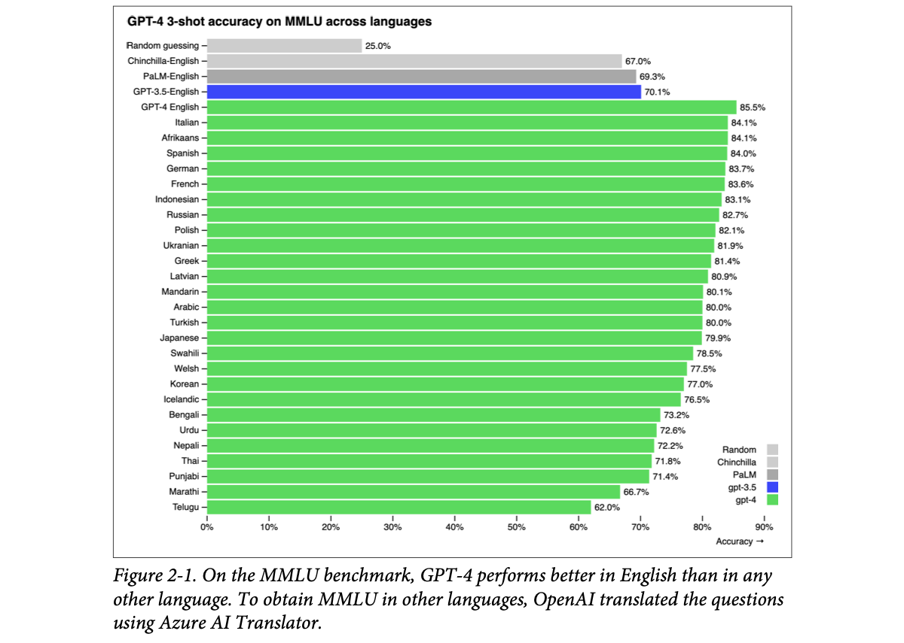
How to read this figure. Each bar is accuracy on the 3-shot MMLU test. Grey bars at the top are reference points in English: random guessing 25.0%, Chinchilla 67.0%, PaLM 69.3%, and GPT-3.5 (blue) 70.1%. Green bars are GPT-4 in each language: English 85.5% on top, then Italian and Afrikaans 84.1%, Spanish 84.0%, German 83.7%, French 83.6%, sliding down through Mandarin 80.1%, Japanese 79.9%, Swahili 78.5%, Korean 77.0%, Bengali 73.2%, Urdu 72.6%, Nepali 72.2%, Thai 71.8%, Punjabi 71.4%, Marathi 66.7% and Telugu 62.0% at the bottom. Two takeaways: GPT-4 in almost every language still beats GPT-3.5 in English, but the three worst languages (Telugu, Marathi, Punjabi) are exactly the most under-represented ones in Table 2-2.
Math tells the same story. Testing six Project Euler problems, Yennie Jun found GPT-4 solved them in English more than three times as often as in Armenian or Farsi, and failed all six in Burmese and Amharic. (Footnote 1: the study is "GPT-4 Can Solve Math Problems—but Not in All Languages"; you can check the token counts yourself with OpenAI's tokenizer.)
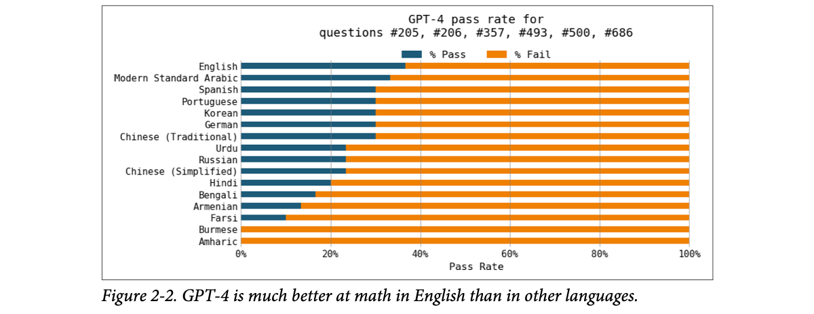
How to read this figure. Each row is a language; the dark blue part is the share of attempts on questions #205, #206, #357, #493, #500 and #686 that passed, orange the share that failed. English has the longest blue bar (around 37%), followed by Modern Standard Arabic, then a group around 30% (Spanish, Portuguese, Korean, German, Traditional Chinese), then Urdu, Russian and Simplified Chinese around 23%, Hindi around 20%, Bengali, Armenian and Farsi lower still, and Burmese and Amharic all orange (0%). Even in English the model fails most of these hard problems; the point is the relative drop across languages.
Latency and cost grow with the number of tokens in the input and output, and tokenization is much more efficient for some languages. Benchmarking GPT-4 on MASSIVE (one million short texts translated into 52 languages), Yennie Jun found the median token length for the same meaning was 7 in English, 32 in Hindi and 72 in Burmese, ten times English. If each token takes the same time, Burmese is about 10× slower, and on per-token pricing 10× more expensive.
Median tokens per short text from the book (English 7, Hindi 32, Burmese 72). Set your traffic and a per-token price (the price is modelled, not from the book).
To fix this, many models focus on non-English languages. Chinese is the most active (ChatGLM, YAYI, Llama-Chinese and others). There are also French (CroissantLLM), Vietnamese (PhoGPT), Arabic (Jais) and many more.
Indian-language efforts (for example Sarvam's and AI4Bharat's models, and tokenizers with larger Indic vocabularies) follow exactly this playbook: add more Indic data and make tokenization cheaper for Indic scripts.
A railway enquiry counter staffed by someone who learned mostly English and a little Hindi from posters. Ask in English and you get a fast, accurate answer. Ask in Marathi and they hesitate, mistranslate the train name, and take five times longer because they spell each word out slowly (more tokens). Where it breaks: a human clerk can learn a language in months; a model needs its training data changed.
Two separate effects. Quality: fewer training examples in a language means weaker patterns for it. Cost/latency: tokenizers are built from the training data, so frequent English words become single tokens while rarer scripts get chopped into many small pieces (sometimes single bytes). More pieces means more decode steps and a bigger bill for the same meaning.
"You're building a voice agent for Indian users. What changes for Hindi or Tamil?" Say: "Three things. Quality: general models are weaker in under-represented languages, so I'd evaluate per language rather than trust English benchmarks. Cost and latency: tokenization can be several times longer, which hurts time-to-first-audio and per-call cost, so I'd measure tokens per turn per language. And I wouldn't blindly translate to English and back, because it loses nuance like honorifics; I'd compare that pipeline against a model trained on Indic data."
General-purpose models such as Gemini, GPTs and Llamas do remarkably well across coding, law, science, business, sports, environmental science and more, largely because those domains appear in their training data. The Washington Post's 2023 analysis (footnote 3: "Inside the Secret List of Websites That Make AI like ChatGPT Sound Smart") shows the mix:
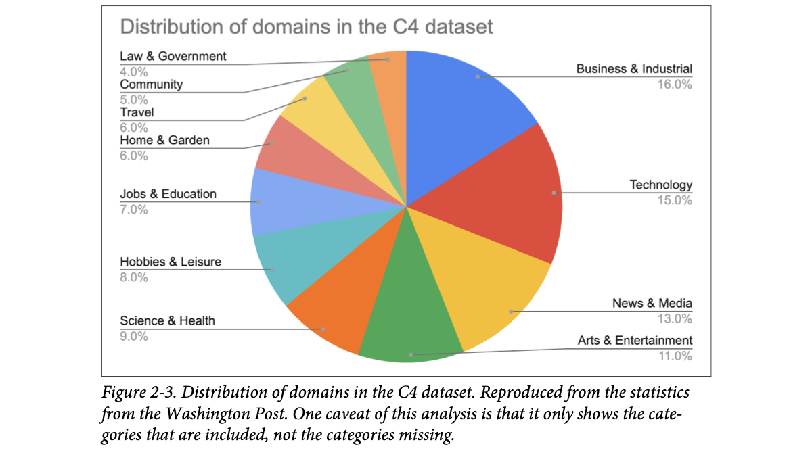
How to read this figure. Each slice is a share of C4's websites by category: Business & Industrial 16%, Technology 15%, News & Media 13%, Arts & Entertainment 11%, Science & Health 9%, Hobbies & Leisure 8%, Jobs & Education 7%, Home & Garden 6%, Travel 6%, Community 5%, Law & Government 4%. Business, tech and news alone are 44%. The caveat matters: a pie can only show what is in the data, so domains that barely exist on the open web (genomics, medical scans) simply don't appear.
There are few analyses of domain distribution for image data, probably because images are harder to categorise than text (footnote 4: for text you can use domain keywords as heuristics; images have no obvious heuristic, and most vision-dataset analyses talk about image size, resolution or video length). You can still infer a model's domains from benchmark scores. Table 2-3 compares CLIP and Open CLIP:
| Dataset | CLIP ViT-B/32 (OpenAI) | Open CLIP ViT-B/32 (Cade) |
|---|---|---|
| ImageNet | 63.2 | 62.9 |
| ImageNet v2 | – | 62.6 |
| Birdsnap | 37.8 | 46.0 |
| Country211 | 17.8 | 14.8 |
| Oxford 102 Category Flower | 66.7 | 66.0 |
| German Traffic Sign Recognition Benchmark | 32.2 | 42.0 |
| Stanford Cars | 59.4 | 79.3 |
| UCF101 | 64.5 | 63.1 |
These benchmarks tell you how the two models do on birds, flowers, cars and a few other categories, but the world is far bigger than a few categories. Notice Open CLIP is much better on cars (79.3 vs 59.4) and traffic signs, slightly worse on countries: different training data, different strengths.
General models answer everyday questions about many domains but are unlikely to do well on domain-specific tasks they never saw in training. Two examples:
For such tasks you curate very specific datasets. Famous domain-specific models:
Domain-specific models are most common in biomedicine, but other fields could benefit: a model trained on architectural sketches might help architects far more than Stable Diffusion, and a model trained on factory plans could be better for manufacturing than a generic ChatGPT.
A general physician (GP) in your colony knows a little about everything and handles 90% of visits. But for a heart scan you go to a cardiologist who has seen thousands of ECGs that the GP never studied. A general LLM is the GP; AlphaFold is the specialist. Where it breaks: a GP can refer you onward; a general model will confidently attempt the specialist task anyway.
Specialised data is (a) in unusual formats a text tokenizer wasn't built for, (b) locked behind cost or privacy, so it never reaches web crawls. Without examples, the model has no patterns to draw on. Curating the data and either training from scratch or finetuning a general base is how you fill the gap.
"When would you build or finetune a domain model instead of prompting GPT-class models?" Say: "When the domain's data isn't on the public web (proprietary formats, private records), when benchmarks on my own domain data show the general model failing, and when volume makes a smaller specialised model cheaper. Before that I'd try RAG to bring domain knowledge in at inference time."
Before training, developers decide what the model looks like: which architecture and how many parameters. These choices affect not only capability but also how usable the model is downstream. A 7B-parameter model is far easier to deploy than a 175B one, and optimising a transformer for latency is very different from optimising another architecture. (Footnote 5: ML training basics are out of scope; self-supervision was covered in Chapter 1 and backpropagation, how parameters are updated from the error, in Chapter 7.)
As of writing, the dominant architecture for language foundation models is the transformer (Vaswani et al., 2017), built on the attention mechanism. It fixed many limits of earlier architectures, but has its own limits. Huyen warns this part is technically dense; skip anything too deep.
The transformer rose on the back of seq2seq (sequence-to-sequence). Introduced in 2014, seq2seq brought big gains on then-hard tasks, machine translation and summarisation. In 2016 Google put seq2seq into Google Translate and claimed its biggest quality improvement so far, which made seq2seq the go-to choice for text sequences.
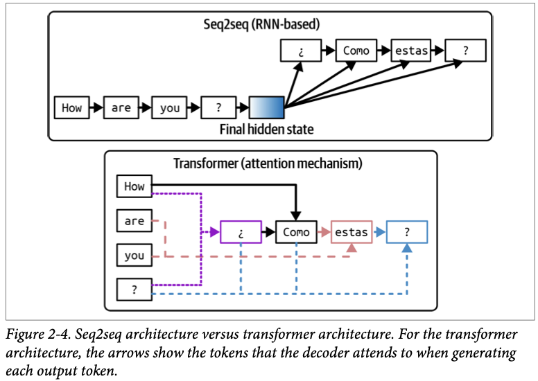
How to read this figure. The top half (also redrawn above) shows the RNN encoder reading "How are you ?" into one final hidden state, from which every Spanish output token is generated. The bottom half shows the transformer translating the same sentence. Coloured dotted lines show which input tokens each output token looks at: "¿" (purple) draws on "How" and "?", "Como" (black) on "How", "estas" (pink) on "are" and "you", and the final "?" (blue) on "?" and the earlier outputs. Each output picks its own relevant inputs instead of squeezing everything through one summary.
The transformer fixes both with attention: when generating each output token, the model can weigh the importance of every input token, like answering by flipping to any page of the book.
Attention was introduced three years before the transformer paper (footnote 7: Bahdanau et al., "Neural Machine Translation by Jointly Learning to Align and Translate") and works with other architectures too. Google used attention with seq2seq in 2016 for GNMT (Google Neural Machine Translation). It only took off when the transformer paper showed attention could be used without RNNs.
The transformer drops RNNs entirely, so input tokens are processed in parallel, which makes input processing much faster. But transformer-based autoregressive language models still have a sequential output bottleneck. So inference has two steps:
Chapter 9 shows how the parallel nature of prefill and the sequential nature of decode drive many inference optimisations.
Compare a seq2seq-style model that reads input one token at a time with a transformer that prefills in parallel. Both must decode outputs one at a time. Time units are invented to show the shape, not real milliseconds.
Modelled: 1 unit per sequential step; transformer prefill counted as 5 units regardless of length (it is parallel, though in reality its cost still grows with length).
Seq2seq is a friend who reads a whole novel, then tells you only a one-paragraph summary, and you must write an exam from that paragraph. The transformer lets you keep the novel open and flip to any page for each answer. Prefill is skimming all pages at once to put bookmarks in; decode is writing your answer word by word. Where it breaks: a human can't truly read all pages at once; a GPU really does process input tokens in parallel.
An RNN's state at step t depends on step t−1, so steps can't run in parallel and information from early tokens fades. Attention computes relationships between all pairs of tokens with matrix multiplications, which GPUs do in parallel. Output still has to be sequential because each new token depends on the tokens generated before it.
"Why is time-to-first-token different from tokens-per-second?" Say: "Prefill and decode. Prefill processes the whole prompt in parallel and builds the KV cache, so time-to-first-token grows with prompt length. Decode generates one token per step, so output speed is per-token and memory-bound. In a voice agent, a long system prompt or RAG context hurts time-to-first-audio through prefill; long replies hurt through decode."
Attention is the heart of the transformer. It uses three kinds of vectors. Keep the "book" analogy from plate 5 in mind:
Attention decides how much to look at each previous token by taking the dot product of the query with that token's key. A high score means the model uses more of that page's content (its value vector) when generating the next token.
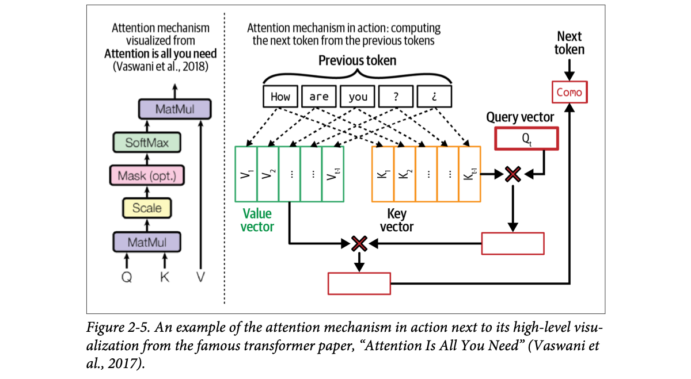
How to read this figure. Left: the classic block diagram. Q and K go into a matrix multiply (MatMul), are scaled, optionally masked (so a token can't peek at future tokens), turned into weights by SoftMax, and the weights multiply V. Right: the same thing on real tokens. The previous tokens "How, are, you, ?, ¿" each produce a value vector (green, V1…Vt−1) and a key vector (orange, K1…Kt−1). The current query Qt is multiplied with all keys (first red ×), giving one score per previous token. Those scores multiply the values (second red ×), giving a mixed vector that is used to produce the next token, "Como".
Because every previous token has its own key and value vector, longer sequences mean more K and V vectors to compute and store. This is one reason extending context length is hard for transformers; efficient K/V computation and storage returns in Chapters 7 and 9.
Given an input x, the key, value and query vectors come from multiplying x by three learned matrices WK, WV, WQ:
We are generating the token after "How are you ? ¿". Vectors are tiny (3 numbers) and invented so you can follow the arithmetic; real ones have 128 numbers per head.
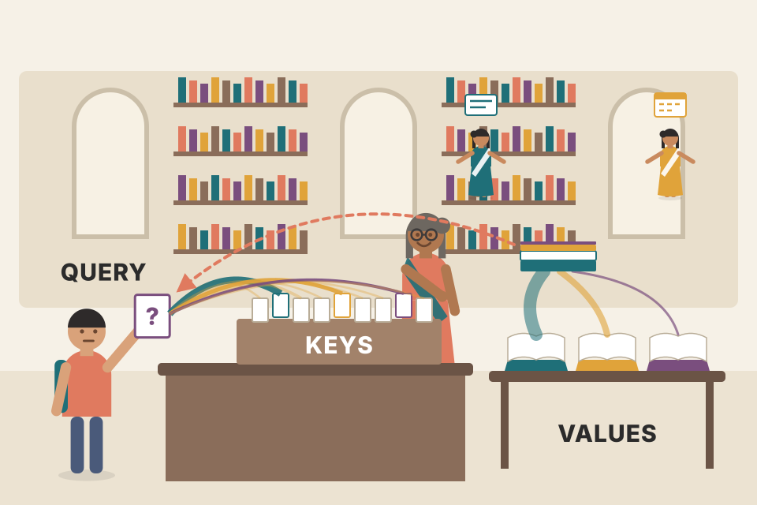
A librarian at a big college library. You walk up with a question (query). Every book has a catalogue card (key) and the book itself (value). The librarian compares your question to every card, pulls the best-matching books, and gives you a blend of pages weighted by how well each card matched. Multi-head attention is having 32 librarians at once, each matching on a different aspect (topic, author, date). Where it breaks: the librarian hands you whole books; attention hands you a weighted average of all values, never a single item.
The dot product measures how aligned two vectors are. Softmax turns the raw scores into weights that add to 1. The output is a weighted average of value vectors, so information flows from relevant tokens into the current position. WQ, WK, WV are learned, so training discovers which "questions" and "labels" are useful. The cost: scores for every pair of tokens (quadratic in length) and a K and V per token kept in memory (the KV cache).
import numpy as np
def attention(x, Wq, Wk, Wv):
q, k, v = x @ Wq, x @ Wk, x @ Wv # project every token
scores = q @ k.T / np.sqrt(k.shape[-1]) # how well each query matches each key
mask = np.triu(np.ones_like(scores), 1) # causal: no peeking at future tokens
scores = np.where(mask == 1, -1e9, scores)
w = np.exp(scores - scores.max(-1, keepdims=True))
w = w / w.sum(-1, keepdims=True) # softmax per row
return w @ v # weighted mix of valuesEach line maps to a box in Fig 2-5: projections, MatMul + Scale, Mask, SoftMax, MatMul with V. Multi-head attention runs this on 32 slices in parallel and concatenates the results, then applies the output projection.
"Explain attention and why long context is expensive." Say: "Each token is projected into a query, key and value. The query of the current position is dot-producted with every previous key, softmaxed into weights, and those weights average the values. Every token needs its K and V stored, so memory grows linearly with context and the score computation grows quadratically. That's the KV cache problem, and why long-context models and RAG contexts cost real money."
A transformer is a stack of transformer blocks. The exact contents differ between models, but each block generally has two modules:
Common activation functions: ReLU (Rectified Linear Unit, Agarap 2018) and GELU (Hendrycks and Gimpel, 2016), used by GPT-2 and GPT-3 respectively. They are very simple; ReLU just turns negative numbers into 0: ReLU(x) = max(0, x). Footnote 9 explains why simple works: researchers once raced to invent fancy activation functions, but they didn't help. The model just needs some nonlinearity to break the linearity of the feedforward layers, and simpler functions are faster and cheaper in compute and memory.
The number of blocks is the model's number of layers. Around the stack sit two more modules:
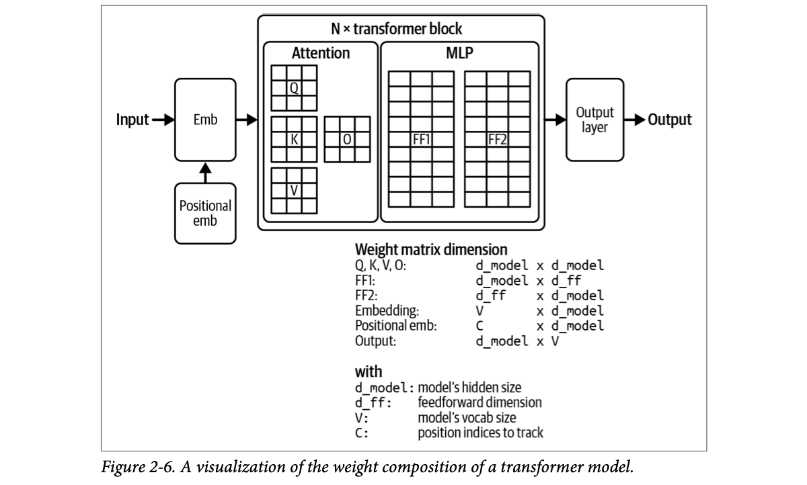
How to read this figure. Left to right is the data flow: Input → Emb (with Positional emb feeding in) → N × transformer block → Output layer → Output. Inside each block, the Attention box holds the Q, K, V and O matrices and the MLP box holds FF1 and FF2. The table at the bottom gives sizes: Q, K, V, O are d_model × d_model; FF1 is d_model × d_ff; FF2 is d_ff × d_model; embedding is V × d_model; positional embedding is C × d_model; output is d_model × V. Here d_model = hidden size, d_ff = feedforward dimension, V = vocabulary size, C = number of positions tracked. Multiply these out and add them up to count parameters.
So a transformer's size is set by a few dimensions: the model dimension (sizes of Q, K, V, O), the number of blocks, the feedforward dimension and the vocabulary size. Bigger values mean a bigger model. Note: a longer context length increases memory footprint but not the parameter count.
| Model | # blocks | Model dim | Feedforward dim | Vocab | Context |
|---|---|---|---|---|---|
| Llama 2-7B | 32 | 4,096 | 11,008 | 32K | 4K |
| Llama 2-13B | 40 | 5,120 | 13,824 | 32K | 4K |
| Llama 2-70B | 80 | 8,192 | 22,016 | 32K | 4K |
| Llama 3-7B (as printed; Meta calls it 8B) | 32 | 4,096 | 14,336 | 128K | 128K |
| Llama 3-70B | 80 | 8,192 | 28,672 | 128K | 128K |
| Llama 3-405B | 126 | 16,384 | 53,248 | 128K | 128K |
Pick a Llama row or move the sliders. The counter adds 4·d² (attention) + 2·d·d_ff (MLP) per block, plus embedding and output matrices (V·d each). Positional embeddings are left out (Llama uses rotary positions, which have no position matrix; beyond the book).
Fig 2-6 shows a two-matrix MLP. Llama actually uses a gated MLP (SwiGLU) with three matrices of size d × d_ff, which is why the simple count lands near 5.3B for "7B" and the gated count lands near 6.7B. Llama 2-70B and Llama 3 also share K/V across heads (grouped-query attention), so the attention count above slightly overestimates those.
A tiffin factory line. The embedding module puts each order on a tray with a seat number (position). Each transformer block is one station with two workers: the attention worker looks at all other trays to see what this tray needs, and the MLP worker cooks with that information. After N stations, the packing counter (output layer) decides which dish to ship. Where it breaks: factory stations do different jobs; transformer blocks all have the same structure, only learned weights differ.
Attention moves information between positions; the MLP processes information within each position. Stacking many blocks lets the model build up from surface patterns to abstract ones. Almost all parameters live in the blocks' matrices, which is why parameter count scales with layers × d_model² and layers × d_model × d_ff.
"Roughly where are the parameters in a 7B model?" Say: "In the transformer blocks: per block about 4·d² for attention (Q, K, V, O) and 2 or 3·d·d_ff for the MLP. With d = 4096, d_ff ≈ 11k and 32 blocks, that's most of the 7B; embedding and unembedding add V·d each. Context length doesn't add parameters but adds KV-cache memory at inference."
Since AlexNet revived deep learning in 2012, architectures have come and gone. Seq2seq was in the spotlight for four years (2014–2018); GANs (generative adversarial networks) a bit longer (2014–2019). The transformer is sticky: it has been around since 2017. (Footnote 10, fun fact: Ilya Sutskever, an OpenAI co-founder, is first author of the seq2seq paper and second author of the AlexNet paper.)
Beating the transformer is hard. It has been heavily optimised since 2017, and any replacement must work at the scale people care about, on the hardware people care about. (Footnote 12: the transformer was designed by Google to run fast on TPUs (Tensor Processing Units) and was only later optimised for GPUs.)
Neural networks can simulate many computer programs. Gradient descent, the training method, is really a search over all programs the network can simulate, looking for the best one for the task. So a new architecture might itself be simulated by existing ones. To win, a new architecture must be able to simulate programs that existing ones cannot. (From his 2023 talk at the Simons Institute, Berkeley.)
Still, several alternatives are gaining traction:
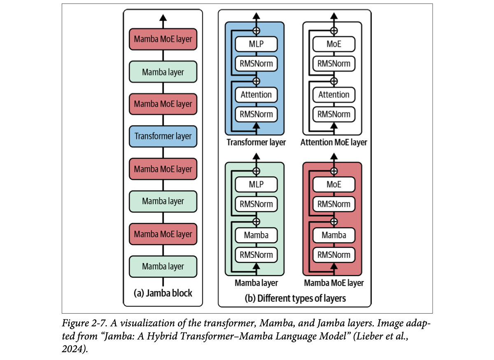
How to read this figure. Panel (a) is one Jamba block, read bottom to top: Mamba layer, Mamba MoE layer, Mamba, Mamba MoE, then a single Transformer layer (blue), then Mamba, Mamba MoE, Mamba, Mamba MoE. So most layers are Mamba and only one in eight is attention. Panel (b) shows the four layer types. Each has two sub-steps, each preceded by RMSNorm (a normalisation) and wrapped by a ⊕ skip connection: the transformer layer is Attention then MLP; the attention MoE layer is Attention then MoE (a mixture-of-experts in place of the MLP); the Mamba layer swaps attention for Mamba; the Mamba MoE layer has Mamba then MoE.
The Mamba authors report inference compute that grows linearly with sequence length, versus quadratically for transformers. Drag the length to see how the gap opens (units are relative, normalised to 1K tokens).
Developing an architecture that beats the transformer is hard, but its limits give big incentives to try. If one does take over, some adaptation techniques in this book might change. But just as the move from ML engineering to AI engineering left many things unchanged, a new underlying architecture won't change the fundamental approaches.
The transformer is like the QWERTY keyboard or the Indian broad-gauge railway: better designs exist on paper, but the whole ecosystem (GPUs, kernels, libraries, skills) is built around it, so a challenger must be clearly better at real scale, not just in a lab. Jamba is like running a few Vande Bharat coaches on a mostly regular train: mix in the new where it helps. Where it breaks: keyboards don't improve each year; model architectures still do.
Attention compares every token with every other token, so cost grows with length squared and memory (KV cache) grows with length. RNNs and SSMs keep a fixed-size state that is updated per token, so cost grows linearly and memory stays constant, but squeezing all history into a fixed state risks forgetting. Hybrids keep a few attention layers for precise recall and use SSM layers for cheap long-range processing.
"Why are people exploring Mamba or hybrids?" Say: "Transformers scale quadratically in sequence length and need a KV cache that grows with context. SSMs like Mamba process sequences in linear time with constant-size state, and hybrids like Jamba interleave a few attention layers with Mamba layers to get long context (256K in the paper) with a small memory footprint. The transformer still wins on ecosystem and proven scale."
Much of AI's recent progress comes from bigger models. The parameter count is usually in the name: Llama-13B is the version of Meta's Llama family with 13 billion parameters. In general more parameters means more capacity to learn, so within one model family, a 13B model will likely beat a 7B one by a lot.
As the community learns to train better, newer models beat older models of the same size. Llama 3-8B (2024) beats even Llama 2-70B (2023) on MMLU.
Parameter count lets you estimate compute needs. A 7B model stored at 2 bytes (16 bits) per parameter needs at least 14 billion bytes = 14 GB of GPU memory just to run inference. (Footnote 13: real memory needs are higher; Chapter 7 shows how to calculate them.)
Parameter count can mislead if a model is sparse, meaning many parameters are zero. A 7B model that is 90% sparse has only 700 million non-zero parameters. Sparsity allows more efficient storage and compute, so a large sparse model can need less compute than a small dense model.
A popular kind of sparse model is mixture-of-experts (MoE) (Shazeer et al., 2017). The model is divided into groups of parameters called experts; only some experts are active for each token.
Defaults are Mixtral 8x7B from the book. Memory is the book's lower bound (weights only). All weights must sit in memory even if only some are active per token; compute per token follows the active count.
A bigger model can lose to a smaller one if it isn't trained on enough data. Imagine a 13B model trained on a dataset of one sentence, "I like pineapples": it will be far worse than a much smaller model trained on more data. So always consider dataset size alongside model size.
LLMs are trained on trillions of tokens. Meta's Llama datasets grew: 1.4T tokens for Llama 1, 2T for Llama 2, 15T for Llama 3. Together's open dataset RedPajama-v2 has 30T tokens, about 450 million books (footnote 14: assuming ~50,000 words or ~67,000 tokens per book) or 5,400 times Wikipedia. But since RedPajama-v2 is indiscriminate content, its high-quality portion is much smaller.
Dataset tokens ≠ training tokens. Training tokens count what the model actually trained on. A 1T-token dataset trained for two epochs (an epoch is one pass over the data) gives 2T training tokens. (Footnote 15: large models are usually pre-trained on only one epoch.)
| Model | Parameters | Training tokens | Tokens per parameter (my calc) |
|---|---|---|---|
| LaMDA (Thoppilan et al., 2022) | 137B | 168B | 1.2 |
| GPT-3 (Brown et al., 2020) | 175B | 300B | 1.7 |
| Jurassic (Lieber et al., 2021) | 178B | 300B | 1.7 |
| Gopher (Rae et al., 2021) | 280B | 300B | 1.1 |
| MT-NLG 530B (Smith et al., 2022) | 530B | 270B | 0.5 |
| Chinchilla | 70B | 1.4T | 20 |
Keep the last column in mind: Chinchilla is the odd one out, and plate 12 explains why.
This section is about data quantity, but quality and diversity matter too. These are the three golden goals for training data, covered in Chapter 8.
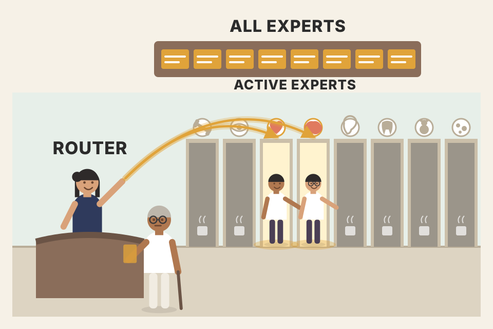
Mixture-of-experts is a big hospital with eight specialist doctors on the payroll (46.7B parameters to house and pay), but each patient sees only the two most relevant ones (12.9B active). The hospital is as big as eight doctors, but each visit costs and takes as long as seeing two. Where it breaks: the "router" picking experts is learned, and experts don't map neatly to human specialities.
Parameters are numbers that must be stored (memory) and multiplied (compute). Dense models use every parameter for every token. MoE models add a router per layer that sends each token to a few expert MLPs, so compute per token stays small while total capacity grows. Memory still has to hold all experts, which is why MoE saves compute, not RAM.
"How much GPU memory do you need to serve a 70B model?" Say: "At least parameters × bytes per parameter for the weights: 70B × 2 bytes ≈ 140 GB in 16-bit, about 35 GB in 4-bit, plus KV cache and activations on top. For an MoE like Mixtral 8x7B, memory follows the total 46.7B, but per-token compute and latency follow the 12.9B active parameters."
Pre-training needs compute. You could count machines (GPUs, CPUs, TPUs), but machines differ hugely in power and cost: an NVIDIA A10 is not an H100, and neither is an Intel Core Ultra processor. A standard unit is the FLOP, a floating point operation; you count how many a task needs.
FLOPs (plural of FLOP) is the amount of work a task needs. FLOP/s (floating point operations per second) is a machine's peak speed. An NVIDIA H100 NVL peaks at 60 TeraFLOP/s: 6 × 1013 FLOPs per second, or 5.2 × 1018 FLOPs per day. (Footnote 16: FLOP/s counts here are in FP32; floating point formats are in Chapter 7.)
FLOP/s is often written FLOPS, which looks almost like FLOPs. To avoid confusion some companies, including OpenAI, use FLOP/s-day for compute requirements: one FLOP/s running for a day, i.e. 60 × 60 × 24 = 86,400 operations. This book uses FLOPs for counts and FLOP/s for speed.
You won't run at peak all the time. Utilization is the share of maximum compute you actually use. What's good depends on model, workload and hardware, but roughly: 50% (half the advertised speed) is okay, above 70% is great, and higher is still worth chasing (Chapter 9 covers hardware metrics).
The book's printed formula says "256 days", but its result ($4,142,811.43) only comes out with the 236 days computed just before, so 236 is used here. Footnote 17: H100s rented for about $2–5 per hour at writing time, and compute is getting cheaper fast.
Peak per GPU fixed at the book's H100 NVL figure, 5.2 × 10¹⁸ FLOPs/day.
FLOPs is the total kilometres of a trip; FLOP/s is your car's top speed. A Delhi–Mumbai drive is ~1,400 km whatever you drive; a faster car shortens the trip. Utilization is traffic: you never drive at top speed the whole way, so 50% of top speed on average is fine and 70% is an empty expressway. Where it breaks: you can split FLOPs across 256 "cars" at once; a road trip can't be split.
"Estimate the cost of a training run." Say: "Divide total FLOPs by the cluster's effective throughput: GPUs × peak FLOP/s × utilization. For GPT-3's 3.14e23 FLOPs on 256 H100s at 70% utilization that's about 340 days, and at $2 per GPU-hour roughly $4M. Then remind people this is one successful run; failed runs and experiments multiply it."
So far: bigger is better. Are there cases where bigger models do worse?
A senior employee who has done things one way for 20 years. Ask them to follow a weird new rule ("for this form, write the date backwards") and they slip into habit more often than the new intern does. More experience means stronger habits, which occasionally beats your instruction. Where it breaks: the prize found these failures only on small artificial tests, not as a general real-world problem.
Larger models learn the training distribution more strongly. When a task asks them to go against a very common pattern (a famous quote with one word changed, a repeated phrase), the learned prior can override the instruction. Separately, alignment training optimises for what raters reward, which can push in directions nobody intended.
"Is bigger always better?" Say: "Mostly, but not always. Inverse-scaling research found tasks, usually involving memorisation or strong priors, where larger models did worse, and Anthropic found more alignment training could make models express odd views. None of the prize tasks showed real-world failures, but it's a reason to evaluate on my own tasks instead of assuming the biggest model wins."
The last sections showed three things: (1) performance depends on model size and dataset size; (2) bigger models and bigger datasets need more compute; (3) compute costs money. Unless money is unlimited, you start from a budget and work out the best performance you can afford. Since compute is usually the limit (expensive and hard to set up), teams start from a compute budget: given a fixed number of FLOPs, which model size and dataset size give the best performance? A model that achieves the best performance for a fixed compute budget is compute-optimal.
The rule comes from DeepMind's 2022 paper "Training Compute-Optimal Large Language Models". The authors trained 400 language models from 70 million to over 16 billion parameters on 5 to 500 billion tokens, and found:
Training used to feel like alchemy. Now, for each FLOP budget, you can predict not only the optimal number of parameters and tokens, but also the expected training loss (if you do everything right).
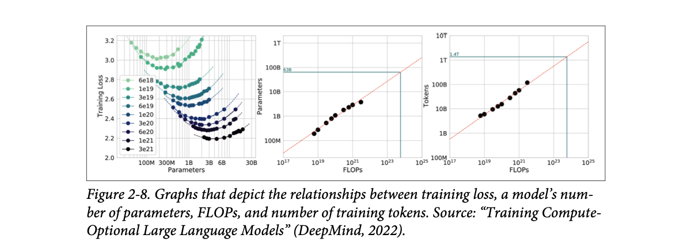
How to read this figure. Left: each coloured curve is one fixed compute budget, from 6e18 FLOPs (light, top) to 3e21 FLOPs (dark, bottom). Along a curve you trade model size (x-axis, 100M to 30B parameters) against tokens. Each curve is U-shaped: too small a model is under-powered, too big a model sees too few tokens; the bottom of the U is the compute-optimal size, and it moves right and down as the budget grows. Middle: the optimal parameter counts (black dots) fall on a straight line on log-log axes; extended to a much larger budget it predicts about 63B parameters. Right: same for tokens, predicting about 1.4T tokens, which is Chinchilla's scale (70B on 1.4T).
Set a parameter count to get the book's compute-optimal token count, and compare with the models in Table 2-5.
A common rule of thumb is training FLOPs ≈ 6 × parameters × tokens. Check: GPT-3 → 6 × 175e9 × 300e9 ≈ 3.15e23, matching the book's 3.14e23. The calculator uses it to show the FLOPs for your choice.
Preparing for an exam with a fixed number of hours. A huge syllabus with one skim (big model, few tokens) or a tiny syllabus revised ten times (small model, too many tokens) both waste time. Chinchilla says: for every unit of "brain" you add, add about 20 units of practice. Where it breaks: if you will sit thousands of exams later (heavy inference), it pays to stay a smaller, faster student who over-practised, which is what Llama did.
Loss falls as a power law in both parameters and tokens. With compute ≈ parameters × tokens fixed, spending too much on either leaves the other as the bottleneck. Minimising loss under that constraint gives the U-shaped curves and the straight-line optimum on log-log plots. Power laws also explain the last mile: each equal step down in error needs a multiplicative increase in resources.
"What's the Chinchilla scaling law and why do people break it?" Say: "For a fixed training compute budget, the loss-minimising choice is about 20 training tokens per parameter, scaling both equally. GPT-3 at 1.7 tokens per parameter was under-trained. Teams now deliberately over-train smaller models, like Llama, because inference cost dominates over a model's life, so a smaller model trained on more tokens is cheaper to serve."
A model's performance depends heavily on its hyperparameters. For small models, people train many times with different settings and pick the best. For large models that's rarely possible: training once already drains resources.
So for many models you get one shot at the right hyperparameters. Hence scaling extrapolation, also called hyperparameter transferring: a research subfield that predicts which hyperparameters will work best for a large model. The approach: study how hyperparameters affect models of several smaller sizes, then extrapolate to the target size. (Footnote 18: Jascha Sohl-Dickstein shared a beautiful visualisation on X of which hyperparameters work and which don't.) A 2022 paper by Microsoft and OpenAI showed hyperparameters could transfer from a 40M model to a 6.7B model.
If each hyperparameter is simply "matters / doesn't matter" (on or off in a study), n hyperparameters give 2ⁿ subsets to examine.
A caterer testing a new biryani recipe for a 2,000-guest wedding. You can't cook ten full wedding batches to tune spice and cooking time, so you test in a small pressure cooker at home, try several sizes (1 kg, 5 kg), see how the right timing changes with size, and extrapolate to the 200 kg degh. Where it breaks: some effects only show up at the big pot (the bottom burns), just like emergent abilities that only appear at scale.
Optimal settings such as learning rate shift systematically with model width and depth. If you parametrise the model so those shifts are predictable (the Microsoft/OpenAI work), the best small-model settings carry over. Interactions between hyperparameters and abilities that only appear at scale break the smooth trend.
"Parameter vs hyperparameter?" Say: "Parameters are the weights learned in training. Hyperparameters are choices I make: architecture ones like layers and hidden size, and training ones like learning rate, batch size and epochs. For huge models you can't grid-search, so you tune on small proxies and transfer, accepting that emergent behaviour may not extrapolate."
So far, each order of magnitude (10×) increase in model size has improved performance. GPT-2 has 10× more parameters than GPT-1 (1.5 billion vs 117 million). GPT-3 has 100× more than GPT-2 (175 billion vs 1.5 billion). That's three orders of magnitude between 2018 and 2021. Three more would mean 100-trillion-parameter models. (Footnote 19: Anthropic CEO Dario Amodei said that if the scaling hypothesis holds, a $100 billion AI model will be as good as a Nobel prize winner.)
Can this go on? Will performance plateau? Hard to say, but two bottlenecks are already visible: training data and electricity.
Foundation models use so much data that we may run out of internet data in the next few years. Training dataset sizes are growing much faster than new data is being created (Villalobos et al., 2022).
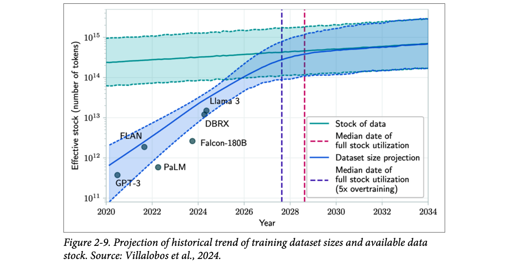
How to read this figure. The y-axis is effective stock in tokens, on a log scale from 10¹¹ to 10¹⁵. The teal band is the stock of human-generated public text, roughly flat around a few times 10¹⁴ with wide uncertainty. The blue line and band are projected training dataset sizes, rising steeply; dots mark real models (GPT-3 and PaLM low on the left, FLAN, Falcon-180B, then DBRX and Llama 3 above 10¹³ in 2024). Where blue meets teal the data runs out: the red dashed line marks the median date of full stock use (around 2028), and the purple dashed line the earlier date (around 2027) if models are over-trained 5×.
An open research question is how to make a model forget specific information it learned. If you deleted a blog post that was already in a model's training data, the model might still reproduce it, letting people access removed content without your consent.
Less obvious but more pressing. Data centres are estimated to use 1–2% of global electricity, projected to reach 4–20% by 2030 (Patel, Nishball and Ontiveros, 2024). Until we can produce more energy, data centres can grow at most about 50×, less than two orders of magnitude. That points to a possible power shortage soon, which will push up electricity costs.
With architecture and scale covered, the next set of design choices is how to align models with human preferences.
A city's groundwater. For years every new building just drilled another borewell (scraped more web). Now the water table is dropping (public data running out), some plots have put up fences (Reddit, Stack Overflow, 45% of C4 restricted), and some wells are getting recycled water mixed in (AI-generated text). Meanwhile the pumps need power and the grid is near capacity (electricity). Where it breaks: groundwater recharges each monsoon; high-quality human text grows much more slowly than models consume it.
Chinchilla-style scaling ties model size to tokens (plate 12), so 10× bigger compute-optimal models want ~10× more tokens. Human text grows slowly, so dataset growth hits the stock. Compute grows with parameters × tokens, and compute is electricity, so the energy bill grows even faster than either.
"What limits further scaling?" Say: "Two hard constraints: data and power. Public human text is close to exhausted by projections, more of the web is restricted or AI-generated, so proprietary data and synthetic data matter more. And data centres' power draw is projected to jump several-fold by 2030, so energy becomes a cost and availability bottleneck. That's one reason inference-time compute and efficiency get more attention."
Post-training starts from a pre-trained model, trained with self-supervision. Such a model usually has two problems:
Post-training fixes both. Every lab does it differently, but there are generally two steps:
Another way to see it: for language models, pre-training optimises token-level quality (predict the next token accurately). Users don't care about tokens; they care about the whole response. Post-training optimises for responses users prefer. Some compare pre-training to reading to gain knowledge and post-training to learning how to use it.
Some people say instruction finetuning to mean SFT; others mean SFT plus preference finetuning. To avoid confusion, the book doesn't use the term.
Post-training uses a small share of resources: InstructGPT spent only 2% of compute on post-training and 98% on pre-training. So think of post-training as unlocking capabilities the pre-trained model already has but that users can't easily reach by prompting alone.
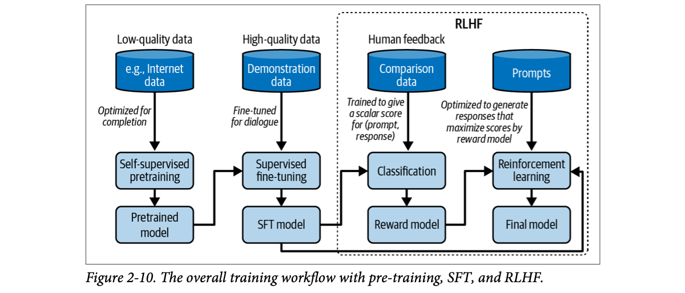
How to read this figure. Read left to right; each blue cylinder is a dataset. (1) Low-quality data (internet) feeds self-supervised pre-training, "optimised for completion", producing the pre-trained model. (2) High-quality demonstration data feeds supervised fine-tuning, "fine-tuned for dialogue", producing the SFT model. (3) Inside the dotted RLHF box: comparison data (human feedback) trains a classification step to give a scalar score for (prompt, response): the reward model. (4) Prompts go into reinforcement learning, which takes the SFT model (the long arrow along the bottom) and optimises it to produce responses the reward model scores highly, giving the final model. You can estimate how aligned a model is by checking which of these steps its makers did.
Squint and Figure 2-10 matches the Shoggoth with a smiley face meme:
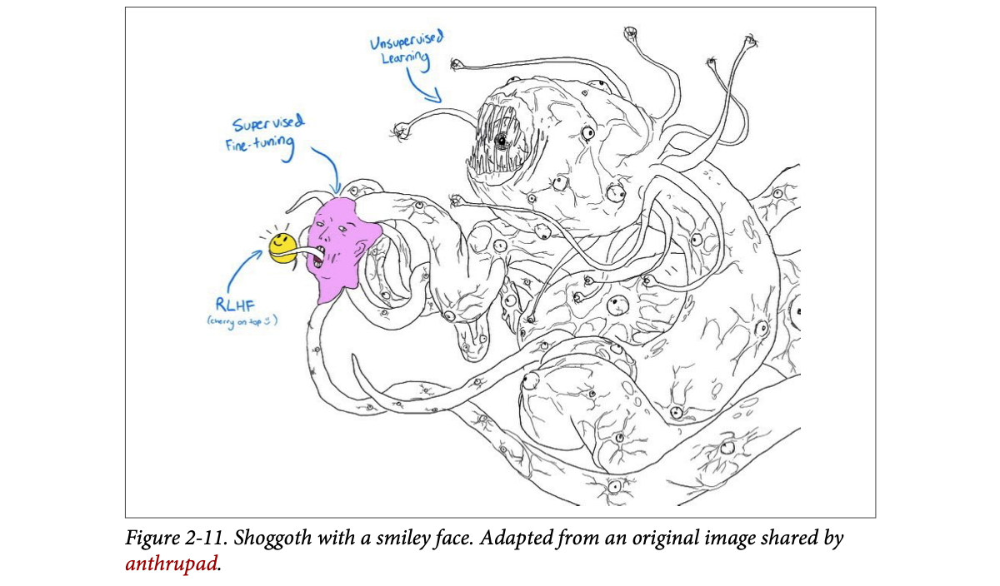
How to read this figure. The huge many-eyed monster is the model after unsupervised (self-supervised) pre-training: an untamed creature built from indiscriminate internet data. The pink human-ish mask is supervised finetuning on better data (Stack Overflow, Quora, human annotations), making it socially acceptable. The tiny yellow smiley, labelled "RLHF (cherry on top)", is preference finetuning that makes it customer-appropriate. The joke: the friendly face is a thin layer over something much larger and stranger.
Pre-training + SFT + preference finetuning is the popular recipe today, but not the only one: you can skip any step, as the next plates show.
Prompt: How to make pizza. Outputs are invented to show the typical behaviour at each stage.
A brilliant student who read every book in the library (pre-training) but has never worked a job. SFT is the apprenticeship where a senior shows them exactly how to answer customers. Preference finetuning is months of customer feedback ("this reply was better than that one") polishing their manner. Where it breaks: the student gains no new facts in the job; post-training mostly changes behaviour, not knowledge, which is why it needs only ~2% of the compute.
Pre-training minimises next-token error on web text, so the model imitates web pages, including their bad parts. SFT shifts the distribution towards (prompt, good response) pairs. Preference finetuning goes further: instead of imitating one answer, it pushes up the probability of answers humans rank higher, which is a response-level objective that next-token loss can't express.
"Walk me through how ChatGPT-style models are trained." Say: "Three stages. Self-supervised pre-training on huge web data for next-token prediction, about 98% of compute, which gives capability but a completer, not an assistant. Supervised finetuning on demonstration (prompt, response) pairs to make it conversational. Then preference finetuning, like RLHF with a reward model and PPO, or DPO, to make responses match human preferences. Base model vs instruct model in an API is the difference between stage one and stages two and three."
As Chapter 1 explained, a pre-trained model completes rather than converses. Type "How to make pizza" and any of these is a valid completion:
If the goal is to respond to users, option 3 is right. Since a model mimics its training data, you show it examples of good responses. These (prompt, response) examples are demonstration data, and the process is sometimes called behaviour cloning: you demonstrate the behaviour, the model clones it.
Different requests need different responses, so demonstration data should cover the range of requests you want handled: question answering, summarisation, translation and so on.
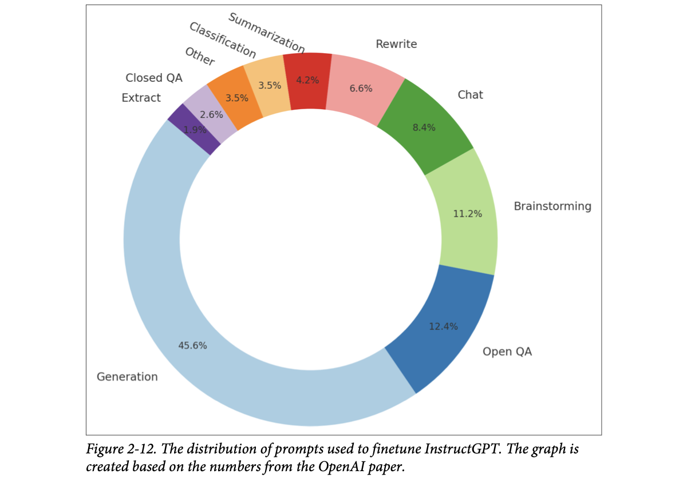
How to read this figure. Each slice is a task type's share of the prompts: Generation 45.6% (nearly half), Open QA 12.4%, Brainstorming 11.2%, Chat 8.4%, Rewrite 6.6%, Summarization 4.2%, Classification 3.5%, Other 3.5%, Closed QA 2.6%, Extract 1.9%. Open-ended, creative tasks dominate; structured tasks like extraction and classification are small slivers. There are no multimodal tasks because InstructGPT is text-only.
Traditional labelling often needs little expertise. Demonstration data can involve complex prompts whose answers need critical thinking, research and judgement about whether a request is appropriate. Table 2-6 shows InstructGPT examples; summarised in my words:
| Prompt (summary) | What the labeler wrote (summary) |
|---|---|
| Defines "serendipity" and asks for it used in a sentence. | One natural sentence about a lucky chance meeting that led to an introduction. |
| A long news article on Justice Ruth Bader Ginsburg's death (omitted for length) with three questions; the third asks why her death has big consequences for the court and the country. | Answers drawn from the article: she led the court's liberal wing, and with a new term starting the chief justice no longer holds the deciding vote in contested cases. |
| ELI5 (explain like I'm five): what causes the "anxiety lump" in the chest under stress? | A plain explanation: throat tension from muscles keeping the airway open, and the chest feeling from the vagus nerve speeding the heart, pausing digestion and releasing stress hormones. |
So companies often hire highly educated labelers. For InstructGPT, ~90% of demonstration labelers had at least a college degree and more than one-third a master's. Labelling an object in an image may take seconds; writing one (prompt, response) pair can take up to 30 minutes, especially for long-context tasks like summarisation. At $10 per pair, the 13,000 pairs OpenAI used would cost $130,000, before the cost of designing the data (which tasks and prompts), recruiting labelers and quality control.
Defaults are the book's InstructGPT numbers. Labeler-hours assume one person per pair (modelled).
[A]: short paragraph, [B]: short paragraph, and so on. They claimed this reliably yields high-quality dialogues.You could even train from scratch on demonstration data and skip pre-training entirely, but the pre-training approach has usually given better results.
Training a new call-centre agent by giving them 13,000 recorded calls handled by your best senior agents. The trainee doesn't learn new facts about your products, they learn how to respond. Writing those model answers is slow, expert work, which is why it costs ₹/$ per answer, not per click. Where it breaks: a trainee can ask "why did you say that?"; the model only sees the final answer, not the senior's reasoning or sources (this matters for hallucination, plate 32).
SFT is ordinary next-token training, but on (prompt, response) pairs, usually with the loss counted on the response part. The model learns the mapping "when the text looks like a user request, what follows is a helpful answer in this style". The mix of tasks in the data (Fig 2-12) decides which kinds of requests the model handles well.
"How would you build an SFT dataset for a support bot?" Say: "Cover the distribution of real requests (mine logs for task types), get high-quality answers written or approved by domain experts, check diversity and labeler bias, and budget for it: InstructGPT's 13,000 pairs were about $130k at $10 each, plus design and QA. To cut cost, bootstrap with heuristically filtered or synthetic data and have experts review."
With great power comes great responsibility. A model that helps people do great things can also help them do terrible ones. Demonstration data teaches the model how to converse, not what kind of conversations it should have. If someone asks for an essay on why one race is inferior, or how to hijack a plane, should it comply?
Those two are clear to most people. Many cases aren't. People from different cultural, political, socioeconomic, gender and religious backgrounds disagree all the time. How should AI answer questions about abortion, gun control, the Israel–Palestine conflict, disciplining children, marijuana legality, universal basic income or immigration? How do you even define and detect controversial issues? Whatever the model says on a controversial issue, some users will be upset. Censor too much and the model becomes boring and drives users away.
Fear of inappropriate responses can stop companies from releasing apps at all. The goal of preference finetuning is to make models behave according to human preference. That's ambitious, maybe impossible: it assumes a universal human preference exists and that it can be embedded into AI. (Footnote 23: sometimes a misaligned model is useful, e.g. to measure the risk of AI-made misinformation you might build a model that's as good as possible at fake news, to see how convincing AI can be.)
A hard goal gets a complicated solution. The earliest successful preference finetuning algorithm, still popular, is RLHF, in two parts:
Newer approaches like DPO (Rafailov et al., 2023) are gaining ground; Meta moved from RLHF for Llama 2 to DPO for Llama 3 to reduce complexity. The book features RLHF because, while more complex, it gives more flexibility to tweak the model. Llama 2's authors went as far as crediting RLHF as the fundamental driver of LLMs' superior writing ability, even surpassing human annotators on some tasks.
A new RJ (radio jockey) on a city FM station. Voice training (SFT) taught them to talk smoothly. Now the station manager teaches judgement: don't air hate, don't help anyone break the law, be careful on politics and religion, but don't be so bland that listeners switch channels. Every city has different listeners, so there's no single right rulebook. Where it breaks: the manager can explain the rules; preference finetuning learns them only from which answers raters preferred.
Next-token training can't express "this whole answer is better than that one". Preference finetuning optimises at the response level using comparisons. RLHF does it in two stages (learn a scorer, then optimise against it with RL); DPO folds both into one supervised-style loss on preference pairs, which is simpler and more stable, at the cost of some flexibility.
"RLHF vs DPO?" Say: "Both use preference pairs. RLHF trains a separate reward model, then uses RL such as PPO to maximise its score, which is flexible but complex and finicky. DPO optimises the policy directly from preference pairs without a reward model or RL loop, which is simpler; Meta switched from RLHF in Llama 2 to DPO in Llama 3 for that reason."
RLHF relies on a reward model: given a (prompt, response) pair, it outputs a score for how good the response is. Training a scorer is a standard ML task; the hard part, as with SFT, is reliable data.
If labelers score each response directly, scores vary: on a 10-point scale one gives 5, another 7, and even the same labeler may score the same pair differently twice. Scoring each sample on its own is pointwise evaluation.
Easier: show two responses and ask which is better. For each prompt, humans or AI generate several responses. The labels become comparison data: (prompt, winning_response, losing_response).
| Prompt | Winning response | Losing response |
|---|---|---|
| A user asks how to get their dog high. | A short reply saying it's not sure what the user means. | A longer reply saying we shouldn't get the dog high and that a dog should experience the world sober. |
Huyen says she personally prefers the losing one, which shows how hard it is to capture diverse human preferences in one mathematical formula.
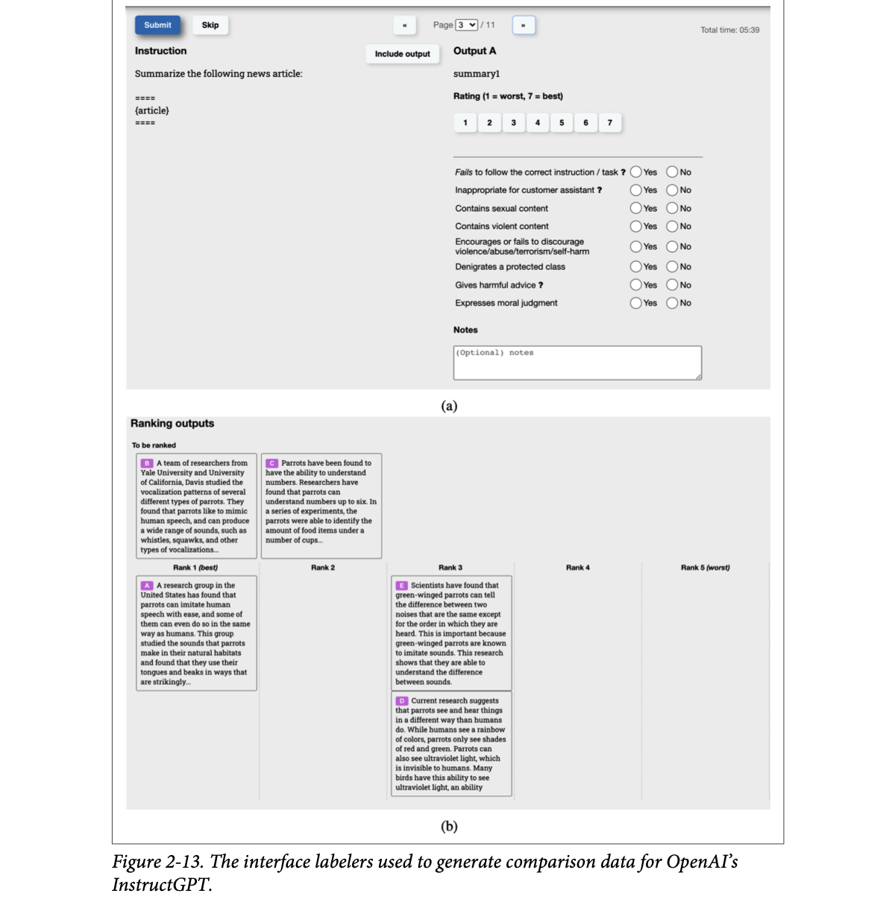
How to read this figure. Panel (a): on the left is the instruction ("Summarize the following news article" with the article). On the right, the labeler rates Output A from 1 (worst) to 7 (best) and ticks yes/no boxes: fails to follow the instruction, inappropriate for a customer assistant, sexual content, violent content, encourages violence/abuse/terrorism/self-harm, denigrates a protected class, gives harmful advice, expresses moral judgement, plus optional notes. Panel (b): five candidate outputs (A–E, here about parrots) are dragged into columns from Rank 1 (best) to Rank 5 (worst); ties are allowed (D and E share Rank 3).
How do you get concrete scores from "A beat B"? Give the model the right objective function. A common one looks at the difference between the scores of the winning and losing responses and tries to maximise it. InstructGPT's formula, term by term:
Set the scores the reward model currently gives the winner and the loser. Loss is small when the winner clearly outscores the loser, and large when it gets the order wrong.
The reward model can be trained from scratch or finetuned from another model, such as the pre-trained or SFT model. Finetuning on top of the strongest foundation model seems to work best. Some believe the reward model must be at least as powerful as the model it scores. But, as Chapter 3 shows, a weak model can judge a stronger one, since judging is thought to be easier than generating.
Judging a school singing competition. Asking each judge "rate this singer out of 10" gives messy numbers (one judge's 7 is another's 5). Asking "who sang better, A or B?" gives much more consistent answers. Collect enough head-to-head results and you can work out a score for every singer, like an Elo rating in chess. Where it breaks: judges agree only ~73% of the time even on pairs, so the learned scores carry that disagreement.
This is the Bradley–Terry idea (name beyond the book): model the probability that the winner beats the loser as σ(sw − sl). Minimising −log of that pushes the winner's score up and the loser's down until the gap is large. Only differences matter, so the absolute score scale is arbitrary, which is fine for ranking candidates.
"How is a reward model trained?" Say: "From pairwise comparisons, not absolute scores, because humans are far more consistent at picking the better of two. For each (prompt, winner, loser) the loss is −log σ(r(winner) − r(loser)), so the model learns to give winners higher scores. Rankings of k responses expand into k(k−1)/2 pairs. It's usually initialised from a strong pre-trained or SFT model."
With a trained reward model (RM), you train the SFT model further to produce responses that maximise the RM's score. Prompts are sampled at random from a prompt distribution (for example, existing user prompts), fed to the model, and its responses are scored by the RM. This is usually done with PPO (proximal policy optimization), an RL algorithm OpenAI released in 2017.
Some companies skip reinforcement learning. Stitch Fix and Grab find the reward model alone is enough: they have the model generate several outputs and keep the ones the RM scores highly. This is the best of N strategy; it uses how a model samples outputs to boost performance (more in plate 25).
Each click generates N candidate replies with random reward scores (normal around 5, spread 1.5) and keeps the top one. Watch the kept score rise with N while cost rises linearly.
RLHF is coaching a cricketer so every shot gets better (changes the player). Best of N is a net session where the batter plays 8 balls and the selector films only the best shot for the highlight reel (changes the selection, not the player). Both use a judge; only one retrains. Where it breaks: in a live match you get one ball; in an API you can afford many samples, but each costs money and time.
PPO updates the model's weights so high-reward responses become more likely, usually (beyond the book) with a penalty for drifting too far from the SFT model, otherwise it learns to game the RM. Best of N leaves the weights alone and uses the RM at inference time as a filter, trading extra inference compute for quality.
"You have a reward model but no RL team. What can you do?" Say: "Use it at inference: sample N candidates and return the highest-scoring one, as Stitch Fix and Grab do. It's simple, needs no training, and quality rises with N, at roughly N× the generation cost. Or use the RM to filter data for SFT. Full RLHF with PPO is a later step if the gains justify the complexity."
A model builds its output through sampling. The coming plates cover sampling strategies and variables (temperature, top-k, top-p), sampling multiple outputs to boost performance, and changing the sampling process to force formats and constraints. Sampling makes AI outputs probabilistic, which explains inconsistency and hallucination; the section ends with what that means and how to work with it.
Given an input, a neural network first computes probabilities of possible outcomes. For a classifier, outcomes are the classes. A spam filter has two: spam and not spam. It might say 90% spam, 10% not spam. You then decide with a rule, e.g. "mark as spam if spam probability > 50%", so this email gets marked.
For a language model, the outcomes are every token in the vocabulary: to produce the next token, it computes a probability distribution over all of them.
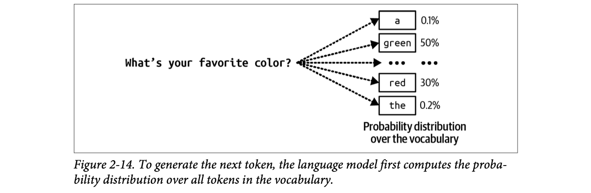
How to read this figure. The prompt "What's your favorite color?" on the left fans out to every vocabulary token on the right, each with a probability. "green" gets 50%, "red" 30%, "the" 0.2%, "a" 0.1%, and the "…" stands for the tens of thousands of other tokens sharing the rest. The whole column sums to 100%.
Where do these probabilities come from? The network outputs a logit vector: one number (logit) per possible value. For a language model, one logit per vocabulary token, so the vector is as long as the vocabulary.
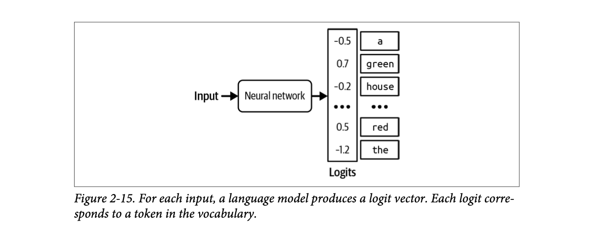
How to read this figure. Input → neural network → a column of raw numbers, each lined up with a token: "a" −0.5, "green" 0.7, "house" −0.2, …, "red" 0.5, "the" −1.2. Bigger logit = more likely, but these are not probabilities: some are negative and they don't add to 1.
Larger logits mean higher probabilities, but logits aren't probabilities: they don't sum to one and can be negative. A softmax layer converts them. With vocabulary size N and logits x1…xN, the probability of token i is:
Edit the five logits from Fig 2-15 (the real vocabulary has many more tokens; these five are treated as the whole vocabulary here). Then sample.
Ordering at a chaat stall where the vendor scores each item in his head: pani puri +2, bhel +1, sev puri 0, dahi puri −1. Softmax turns those raw scores into "how often I'd recommend each". Greedy: he always says pani puri. Sampling: he usually says pani puri but sometimes bhel, so regulars don't get bored. Where it breaks: the vendor knows why he likes pani puri; logits are just numbers the network learned.
The output layer (unembedding, plate 7) multiplies the final hidden vector by a d_model × V matrix, giving V logits. The exponential in softmax makes every value positive and exaggerates gaps (a logit 1 higher is e ≈ 2.7× more likely); dividing by the sum makes them add to 1. Every sampling knob in the next plates works by changing logits or probabilities before the pick.
"What's the difference between a logit and a probability?" Say: "Logits are the raw, unbounded scores the model outputs, one per vocabulary token. Softmax exponentiates and normalises them into a probability distribution that sums to one. Greedy decoding takes the argmax; sampling draws from the distribution, which is where randomness, creativity and inconsistency come from."
The right sampling strategy makes outputs fit your app: one strategy makes the model more creative, another more predictable. Many strategies exist, and you can design your own, though that usually requires access to the model's logits.
Sampling straight from the distribution can make a model less creative. For "My favorite color is …", common colours ("red", "green", "purple") get the highest probabilities, so the answer sounds like a five-year-old's: "My favorite color is green". Because "the" has low probability, the model rarely starts a creative answer such as describing the colour of a calm lake on a spring morning.
Temperature redistributes probabilities. Intuitively, a higher temperature lowers the probabilities of common tokens and raises those of rarer tokens, enabling more creative responses. Technically, temperature is a constant you divide the logits by before softmax: for temperature T, token i's adjusted logit is xi/T, and softmax is applied to that.
| Temperature | Adjusted logits | P(A) | P(B) | Effect |
|---|---|---|---|---|
| 1 (default) | [1, 2] | 0.27 | 0.73 | B picked 73% of the time |
| 0.5 | [2, 4] | 0.12 | 0.88 | B picked 88% of the time: sharper |
| < 0.1 | [>10, >20] | ≈ 0 | ≈ 1 | almost always B |
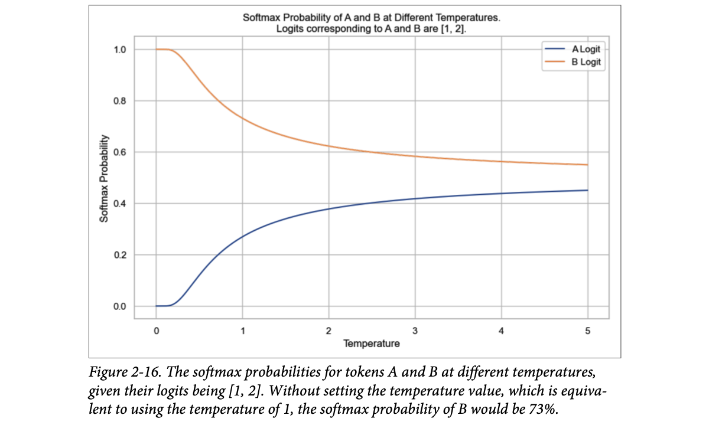
How to read this figure. x-axis: temperature 0 to 5; y-axis: softmax probability. The orange line (B, the bigger logit) sits at 1.0 near temperature 0, drops quickly to 0.73 at temperature 1, and then slowly approaches 0.5 (about 0.55 at T = 5). The blue line (A) is the mirror image: 0 near T = 0, 0.27 at T = 1, rising towards 0.5. As temperature grows, the two options become nearly equally likely; as it shrinks, the bigger logit takes everything.
Logits for the next token after "My favorite color is" (modelled, chosen so that T = 1 roughly matches Fig 2-14). Also shows the book's A/B example.
It's common to set temperature to 0 for more consistent outputs. Technically temperature can never be 0 (you can't divide by 0). In practice, at 0 the model just picks the token with the largest logit (an arg max, footnote 25), skipping the logit adjustment and softmax.
Look at the probabilities a model computes for given inputs. If they look random, the model hasn't learned much.
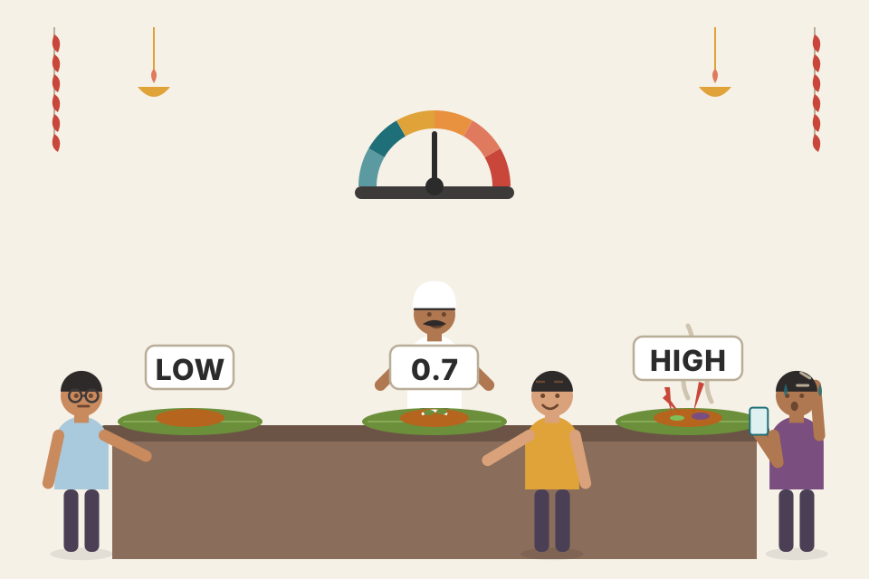
Temperature is the spice level you ask for at a Chettinad restaurant. Low: the chef sticks to the house standard every time (predictable, maybe bland). High: the chef improvises, sometimes brilliantly, sometimes too wild to eat. 0.7 is "medium": a little adventure, still recognisably the dish. Where it breaks: the chef's improvisation has intent; high temperature just gives rare tokens a bigger share, with no taste involved.
Dividing logits by T < 1 stretches the gaps between them, and the exponential in softmax turns bigger gaps into much bigger probability ratios, so the top token dominates. T > 1 shrinks the gaps, pushing probabilities towards uniform. The ratio between two tokens' probabilities is e(xi−xj)/T, so T directly scales how much the model's preferences count.
"What temperature would you use for a tool-calling agent vs a brainstorming feature?" Say: "Near 0 for tool calls, extraction and classification, where I want the most likely, consistent answer. Higher, around 0.7 to 1, for brainstorming or creative copy. Temperature divides the logits before softmax: low sharpens the distribution, high flattens it. Even at 0, outputs can vary slightly across runs because of hardware and batching, so I don't rely on it for exact reproducibility."
Many providers return their models' probabilities as logprobs, short for log probabilities. The log scale is preferred for neural network probabilities because it reduces the underflow problem (footnote 26: a number too small for the format gets rounded down to zero). With a vocabulary of, say, 100,000 tokens, many token probabilities are tiny, too small for the machine to represent, and would become 0. Logs keep them usable.
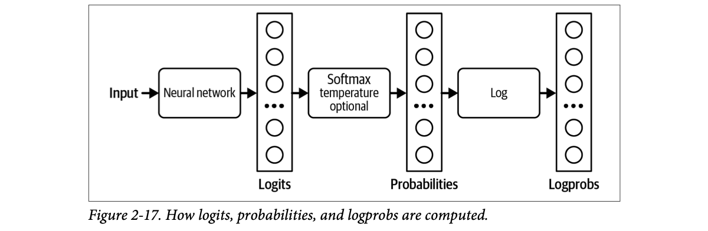
How to read this figure. Three columns of the same length (one entry per vocabulary token) produced in sequence: the network outputs logits; softmax (with optional temperature) turns them into probabilities; taking the log of each gives logprobs. Logprobs are ≤ 0 (log of a number between 0 and 1 is negative), and the most likely token has the logprob closest to 0.
Logprobs are useful throughout the book: for building apps (especially classification), evaluating apps, and understanding models. But many providers don't expose logprobs, or expose a limited version, likely for security: exposed logprobs make it easier for others to replicate the model. (Footnote 27: at writing time the OpenAI API shows logprobs for only up to the 20 most likely tokens; it used to return logprobs of arbitrary user-provided text but stopped in September 2023. Anthropic doesn't expose logprobs.)
Multiply a run of small probabilities (each token's probability in a long sequence) in 32-bit floats, versus adding their logs.
Reporting earthquake strength. Writing the raw energy gives numbers with endless zeros; the Richter scale (a log scale) turns them into friendly numbers like 4.5 or 7.2, and comparing them is just subtraction. Logprobs do the same for tiny probabilities. Where it breaks: Richter values are positive; logprobs are negative, with 0 meaning certainty.
Floating-point numbers have a smallest representable value (about 1e-45 for 32-bit floats). Products of many probabilities fall below it quickly. log(a × b) = log a + log b, so working in logs turns tiny products into moderate sums, and log-softmax can be computed stably straight from logits.
"How would you use logprobs in production?" Say: "As a confidence signal. For classification I can read the logprob of each label token instead of parsing text, and threshold low-confidence cases to a human. For generation, average logprob helps rank candidates or flag likely hallucinations. Caveat: many APIs limit logprobs, OpenAI to the top 20 tokens, and Anthropic doesn't expose them."
Top-k reduces computation without giving up much diversity. Softmax needs two passes over all values: one to compute the sum Σ exj, and one to compute exi / Σ exj for each value. With a large vocabulary that's expensive. So after computing logits, take only the top k logits, do softmax over those, and sample from them. Depending on how diverse you want outputs, k is 50 to 500, far smaller than the vocabulary. Smaller k → more predictable, less interesting text.
Top-k always considers exactly k values, but the right number depends on the situation. For "Do you like music? Answer with only yes or no." it should be two. For "What's the meaning of life?" it should be much larger.
Top-p, also called nucleus sampling, chooses dynamically: sort tokens by probability, add them up from the top, and stop when the sum reaches p. Only those tokens are considered. Typical values are 0.9 to 0.95. A top-p of 0.9 means: consider the smallest set of values whose cumulative probability exceeds 90%.
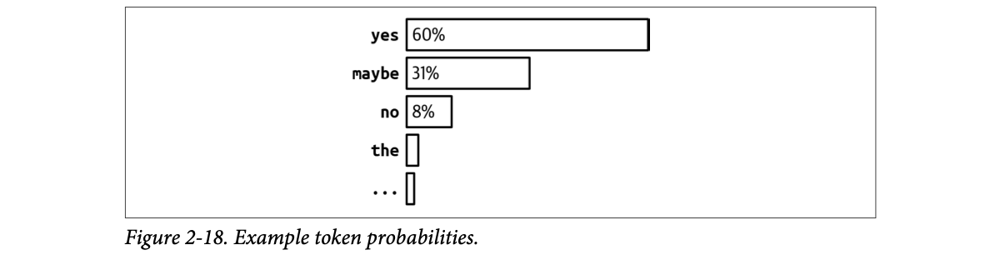
How to read this figure. The candidate next tokens sorted by probability: "yes" 60%, "maybe" 31%, "no" 8%, then "the" and the rest with tiny bars. Running totals: 60%, 91%, 99%. With top-p = 90%, the set stops at "yes" + "maybe" (91% > 90%). With top-p = 99%, it includes "yes", "maybe" and "no".
Pick a prompt. The pipeline: logits → ÷ temperature → softmax → keep top-k → keep the top-p nucleus → drop tokens below min-p → renormalise → sample. Crossed-out tokens are excluded. Logits are modelled; the yes/no prompt is tuned to match Fig 2-18 at T = 1.
Picking a restaurant with friends. Top-k: "only consider the top 5 on Zomato", no matter how close #6 is. Top-p: "keep adding places from the top until we've covered 90% of what the group wants": for a South Indian breakfast that's just two darshinis; for "anything for dinner" it's a long list. Min-p: "ignore anywhere rated below a threshold". Temperature is how much you let the underdogs' ratings count. Where it breaks: friends can debate; the sampler just cuts and draws.
The long tail of a 100k-token vocabulary is mostly junk, but collectively it can hold real probability mass, so plain sampling occasionally draws a nonsense token. Top-k cuts the tail at a fixed count; top-p cuts it at a fixed mass, so the cut adapts to how confident the model is; min-p cuts at a fixed probability floor. After cutting, probabilities are renormalised among the survivors.
"Explain top-p and why it's preferred over top-k." Say: "Top-k keeps a fixed number of candidates; top-p keeps the smallest set whose cumulative probability reaches p, so it shrinks to one or two tokens when the model is confident and widens when many continuations are plausible. Top-k does save softmax compute; top-p mainly gives more context-appropriate outputs. Typical settings are p around 0.9 to 0.95, often combined with temperature."
An autoregressive model generates one token after another. Long outputs take more time, cost more compute and money (footnote 28: paid APIs often charge per output token), and can annoy users. So you may set a condition to stop.
Stopping conditions keep latency and cost down. The downside of stopping early: if you need a format, premature stopping can break it. Ask for JSON and an early stop can leave out closing brackets, so the JSON won't parse.
The model "wants" to emit the JSON below (tokens shown as chips). Lower the max-token limit and see where it gets cut and whether it still parses.
A TV news anchor with a hard time limit. A fixed limit cuts the reporter off mid-sentence; a cue word ("back to the studio") ends cleanly. If the reporter was reading out a phone number when time ran out, the number is useless, just like truncated JSON. Where it breaks: a reporter can rush to finish; a model doesn't know the limit is coming unless told.
Generation is a loop: sample a token, append it, repeat. The loop exits when the sampled token is a stop token (end-of-sequence or a stop string) or the counter hits max_tokens. Models learn to emit end-of-sequence during training, so a well-trained model usually ends naturally; max_tokens is a safety cap, and setting it too low silently truncates.
"Your JSON parser sometimes fails on model output. Why?" Say: "One common cause is truncation: the response hit max_tokens before closing the object. Check the finish reason (length vs stop), raise the limit or shorten the schema, and add a repair step for missing brackets. Also use stop sequences to end cleanly, and structured-output features where available."
Plates 20–24 were about sampling the next token. This one is about sampling whole outputs. A simple way to raise quality is test time compute: generate several responses per query instead of one, to raise the chance of a good one.
Some early reviewers found the name confusing. In research, "test time" means inference, because researchers mostly run inference to test models. The technique applies to production too. It's called test time compute because how many outputs you can sample depends on how much compute you give each inference call.
Either show users several outputs and let them choose, or select automatically. Methods from the book:
An output's probability is the product of its tokens' probabilities. For ["I", "love", "food"] with p(I) = 0.2, p(love | I) = 0.1, p(food | I, love) = 0.3:
(The book writes the second factor as p(I | love); the conditional is meant to be "love given I".)
Since the log of a product is the sum of logs, a sequence's logprob is the sum of its tokens' logprobs. But summing favours short sequences (logprobs are negative, so more tokens = lower total). Fix: use the average logprob (sum ÷ length) and pick the highest. At writing time this is what the OpenAI API does (footnote 30: set best_of to, say, 10 and it returns the output with the highest average logprob out of 10).
Two candidate answers (modelled token probabilities). Sum prefers the short one; average judges per token.
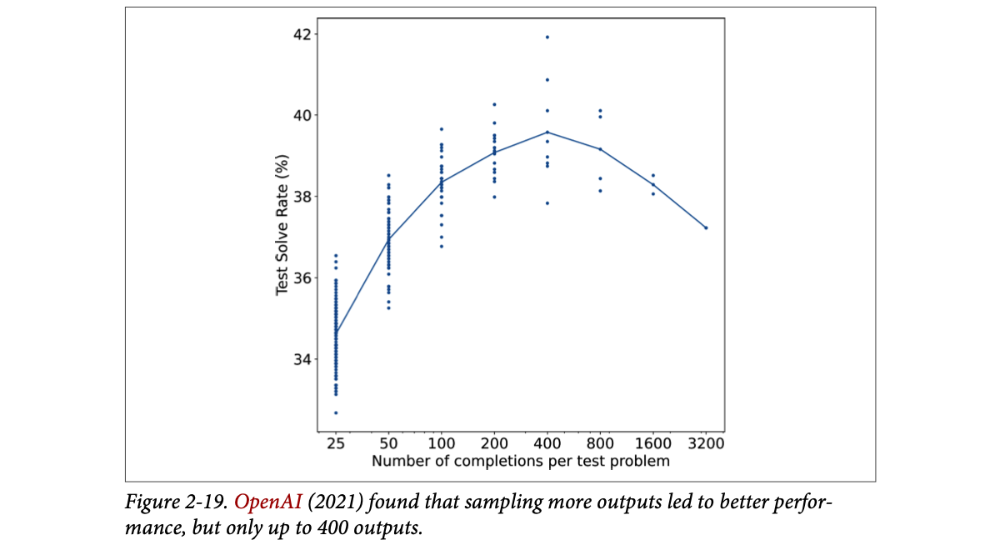
How to read this figure. x-axis: completions sampled per test problem (25, 50, 100 … 3200, doubling each tick). y-axis: test solve rate (%). Dots are individual runs, the line their trend. The rate climbs from about 34.5% at 25 samples to a peak near 39.6% at 400, then declines to about 37% at 3200. OpenAI's hypothesis: with more samples, the chance of finding an adversarial output that fools the verifier rises.
A Stanford study disagreed: "Monkey Business" (Brown et al., 2024) found the number of problems solved often rises log-linearly as samples go from 1 to 10,000. Whether test time compute can scale forever is interesting, but Huyen doubts anyone in production samples 400 or 10,000 outputs per input: the cost would be astronomical.
For tasks with exact answers, pick the most frequent output (footnote 31: Wang et al., 2023 call this self-consistency). Solve a math problem several times and take the most common answer; for multiple choice, the most common option. Google did this evaluating Gemini on MMLU: 32 samples per question gave a higher score than one.
Each sample is right with probability p; wrong answers spread over 3 wrong options (multiple choice). Simulated over 2,000 questions.
A model is robust if small input changes don't dramatically change its output. The less robust a model, the more it gains from sampling multiple outputs. (Footnote 32: the best fix for a brittle model, though, is to swap it.) In one of Huyen's projects, a model extracting information from a product image succeeded only half the time; the other half it claimed the image was too blurry or the text too small. Trying three times per image got the right information for most images.
If one try succeeds 50% of the time, the chance all three fail is 0.5 × 0.5 × 0.5 = 12.5%, so at least one succeeds 87.5% of the time. Real tries aren't fully independent (a truly unreadable image fails every time), which is why the book says "most", not all.
A board exam paper-checker unsure of a student's handwriting asks three colleagues to read the answer and goes with what two of them say (majority vote). A recruiter interviewing 5 candidates and hiring the best is best of N with a human verifier. Where it breaks: past some point, interviewing more people mostly finds someone who is good at fooling the interviewer, which is exactly OpenAI's 400-sample result.
Each sample is a draw from the model's distribution. If the right answer has decent probability, more draws make it more likely to appear (best of N) and, if errors are scattered while the right answer is consistent, more likely to win a vote (self-consistency). A selector (logprob, verifier, heuristic) turns that extra compute into quality; a flawed selector eventually gets fooled.
"How can you improve quality without changing the model?" Say: "Spend compute at inference. Sample several candidates, varying temperature for diversity, and select with a verifier or reward model, a validity check like 'parses as SQL', average logprob, or a majority vote for exact-answer tasks. OpenAI found a verifier worth a 30× larger model. The costs are linear: N samples ≈ N× tokens, and for latency I can race parallel samples and return the first valid one."
In production you often need outputs in a specific format. Structured outputs matter in two scenarios:
The most common category is semantic parsing: converting natural language into a structured, machine-readable format. Text-to-SQL is one example: outputs must be valid SQL. Semantic parsing lets people use APIs in plain English; text-to-PostgreSQL lets a user ask "What's the average monthly revenue over the last 6 months?" instead of writing the query.
The book shows a text-to-regex prompt to GPT-4o. In my words: the system prompt says "given an item, write a regex covering all the ways it can be written; return only the regex", with one example (a US phone number). The user then sends "Email address →" and "Dates →", and GPT-4o returns a single regex for each, e.g. a pattern for name@domain.tld and one for day/month/year with /, - or . separators. Another category in this scenario: classification, where outputs must be valid classes.
The task doesn't need structure, but the output is consumed by other applications, so it must be parsable. An AI-written email needn't be structured, but a downstream app might need it as JSON with specific keys, like {"title": ..., "body": ...}. This is especially important for agentic workflows, where a model's outputs are passed as inputs to tools (Chapter 6).
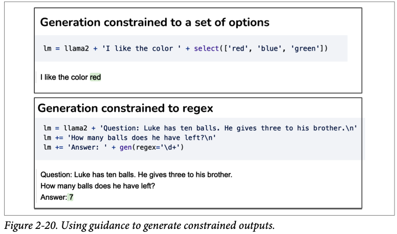
# 1) constrained to a set of options
lm = llama2 + "I like the color " + select(["red", "blue", "green"])
# -> "I like the color red" (can only ever be one of the three)
# 2) constrained to a regex
lm = llama2 + "Question: Luke has ten balls. He gives three to his brother.\n"
lm += "How many balls does he have left?\n"
lm += "Answer: " + gen(regex=r"\d+")
# -> "Answer: 7" (digits only, no chatty sentence)select forces the next words to be one of a list; gen(regex=...) forces generated text to match a pattern. The highlighted parts in the book's figure ("red", "7") are the model-generated bits.
You can guide structured output at different layers of the AI stack. The first three are bandages: they work best if the model is already good at the format and needs a nudge. For intensive treatment, use constrained sampling and finetuning. Test time compute was plate 25 (keep generating until one output fits); the next plates cover the other four.
Filling a government form. Prompting is telling the applicant "write in capitals, inside the boxes". Post-processing is a clerk fixing small slips. Test time compute is handing out fresh forms until one is filled right. Constrained sampling is a form with one box per letter and a dropdown for state, so wrong entries are physically impossible. Finetuning is training the applicant until they always fill it right. Where it breaks: forms can't stop you writing nonsense inside valid boxes, just as JSON mode can't guarantee correct content.
A model produces format by predicting the right tokens one at a time; nothing in plain sampling forces a closing brace. Each layer intervenes at a different point: before generation (prompt), during token selection (constrained sampling), after generation (post-processing, retries), or inside the weights (finetuning).
"How do you guarantee an LLM returns valid JSON for a tool call?" Say: "Layered. Clear schema in the prompt; use the provider's structured-output or JSON mode, or constrained decoding with a grammar if I host the model; validate with a schema and repair cheap mistakes; retry on failure; set max tokens high enough to avoid truncation. And remember valid JSON isn't correct JSON, so validate field values too. If volume is high and failures persist, finetune on the format."
Prompting is the first line of action: tell the model the format you want. Whether it complies depends on its instruction-following ability (Chapter 4) and the clarity of your instruction (Chapter 5). Models keep improving, but there's no guarantee (footnote 33: Huyen has seen the share of correctly generated JSON objects range from 0% to the high 90s, depending on application and model). Even a few percent invalid outputs can be unacceptable.
To raise validity, some people use AI to validate and/or correct the first output, an instance of AI as a judge (Chapter 3). That means at least two model queries per output: one to generate, one to validate. It can improve validity a lot, but the extra cost and latency can be too much for some apps.
Simple, cheap, and surprisingly effective. Teaching, Huyen noticed students repeat similar mistakes; models do too, across queries. So find the common mistakes and write a script to fix them, e.g. add a missing closing bracket. LinkedIn's defensive YAML parser raised correct YAML outputs from 90% to 99.99% (Bottaro and Ramgopal, 2020).
JSON and YAML are both common text formats, and GPT-4 handled both. LinkedIn chose YAML because it's less verbose, so it needs fewer output tokens than JSON.
Post-processing only works when mistakes are easy to fix, which usually means outputs are already mostly correct with occasional small errors.
Edit the "model output" and see which fixes are applied. Fixes: strip code fences and chatter around the object, remove trailing commas, add missing closing brackets/braces.
def repair_json(text):
start = text.find("{") # drop chatter before the object
body = text[start:].replace("```", "") # drop code fences
body = re.sub(r",\s*([\]}])", r"\1", body) # trailing commas
opens = body.count("{") - body.count("}")
arrs = body.count("[") - body.count("]")
return body.rstrip() + "]" * arrs + "}" * opens # close what's still openEach line targets one mistake you saw often in logs. A real version tracks nesting order and strings; the point is that cheap, targeted rules catch a big share of failures.
A typing pool where the same typist always forgets the full stop at the end of a letter. Rather than retrain them, the office manager just checks for and adds it before posting. Where it breaks: if the typist sometimes writes a different letter entirely, no proofreader can fix it.
A model's errors aren't random; they come from the same learned tendencies, so they cluster into a few patterns (missing closers, trailing commas, prose around the JSON). Rules targeting those patterns fix most failures at almost zero cost, while a second LLM call costs a full query in money and latency.
"Your structured-output failure rate is 3%. What do you do?" Say: "Look at the failures. If they're a few repeated patterns, add a repair step, like LinkedIn's defensive YAML parser, which took them from 90% to 99.99%. If failures are varied, retry or use a validator call, and if they're common, move to constrained decoding or finetuning. I'd also consider YAML or a terser schema to cut output tokens."
Constrained sampling guides generation toward certain constraints; structured-output tools typically use it. To generate a token, the model samples only among values that meet the constraints. Recall the model first outputs a logit vector, one logit per token. Constrained sampling filters that vector, keeping only tokens that satisfy the constraints, then samples from them.
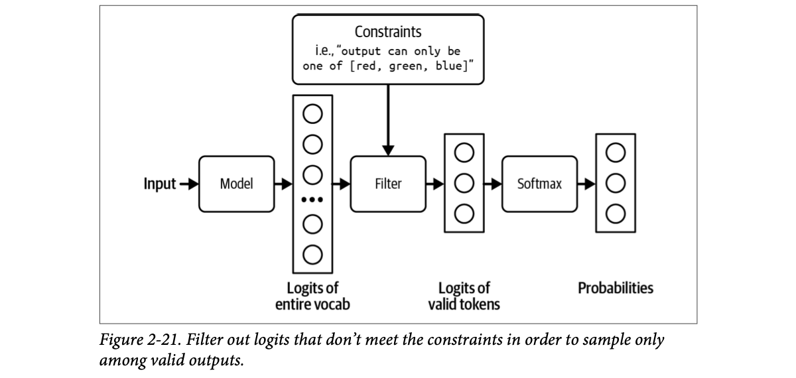
How to read this figure. Input → Model → a long column of logits for the entire vocabulary. A Filter step, fed from above by the Constraints box ("output can only be one of [red, green, blue]"), keeps a short column: the logits of valid tokens only. Softmax then runs on those three, giving probabilities that sum to 1 among valid options only. Nothing outside the constraint can ever be sampled.
The figure's constraint is easy to filter. Most aren't. You need a grammar that says what's allowed at each step. JSON grammar, for instance, says that after { you can't have another { unless it's inside a string, as in {"key": "{{string}}"}. Building that grammar and wiring it into sampling is non-trivial.
Schema: {"color": one of "red" | "green" | "blue"}. At each step the model "wants" its favourite token (orange), but only tokens the grammar allows (green) can be picked.
An IRCTC booking form with dropdowns: you can't type "Mars" as the destination, because only valid stations appear. The model can still pick a wrong-but-valid station, just as constrained JSON can hold a wrong value. Where it breaks: building the "dropdown" for a free-form language like JSON or SQL means encoding a full grammar, not a list.
At each step a grammar engine tracks the parser state and computes the set of tokens that keep the output valid. Invalid tokens get their logits set to −∞ (zero probability) before softmax. Tokenizers complicate this: a single token can span several grammar symbols, so engines precompute which tokens are valid in each state, and that bookkeeping is where latency comes from.
"How does constrained decoding work, and when would you avoid it?" Say: "At each decoding step it masks the logits of tokens that would break a grammar or schema, then samples among the rest, so output is valid by construction. I'd avoid it when I'm on a closed API that doesn't expose logits, when I need a format without grammar support, or when grammar checking adds unacceptable latency. It guarantees syntax, not correct content."
select and gen(regex) are constrained sampling.Finetuning on examples in your desired format is the most effective and general way to get that format (footnote 34: training from scratch on such data also works, but the book isn't about building models from scratch). It works for any format. Simple finetuning doesn't guarantee the format, but it's much more reliable than prompting.
For some tasks you can guarantee the format by changing the architecture before finetuning. For classification, append a classifier head to the foundation model so it can only output one of the predefined classes. This is also called feature-based transfer (Chapter 7). (Footnote 35: some finetuning services do this automatically; OpenAI's used to let you add a classifier head, but at writing time that feature is disabled.)
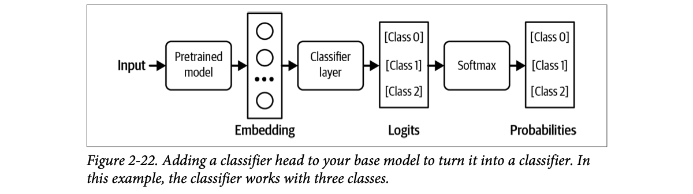
How to read this figure. Input → pre-trained model → an embedding vector (the model's representation of the input). Instead of the usual vocabulary-sized output layer, a small classifier layer maps the embedding to just three logits, one per class. Softmax turns them into three probabilities. Since there are only three outputs, the model cannot produce anything other than Class 0, 1 or 2.
During finetuning you can retrain the whole model end-to-end or only part of it, such as the classifier head. End-to-end needs more resources but promises better performance.
Compare parameter counts of a classifier head (d_model × classes) with the full unembedding (d_model × vocab). d_model = 4096 as in Llama 2-7B.
All these structured-output techniques exist because we assume the model can't produce structure on its own. As models improve at following instructions, Huyen expects that getting exactly what we need will take minimal prompting and these techniques will matter less.
A brilliant general writer hired as a sorting clerk. Finetuning is weeks of practice writing only "urgent / normal / spam" on each letter: very reliable, but they could still scribble something else. A classifier head replaces their pen with a three-button stamp: the only possible outputs are those three. Where it breaks: the stamp makes format certain, not judgement correct.
The pre-trained model already builds rich representations; a classifier head is just a small matrix on top. Training only the head is cheap (few parameters, quick); training end-to-end lets the inner representations adapt too, usually scoring higher. Either way, the output space is fixed by architecture, not by hoping the model emits the right word.
"You need intent classification at high volume. Generative LLM or classifier?" Say: "If the label set is fixed, put a classifier head on a smaller pre-trained model and finetune: output is guaranteed to be a valid class, latency and cost are low, and I get calibrated probabilities. Prompting a big generative model is fine to start or for labelling data, but it can emit invalid labels and costs more per call."
Sampling makes AI models probabilistic. Ask a friend "What's the best cuisine in the world?" twice, a minute apart, and you get the same answer. Ask an AI model and the answer can change. If the model thinks Vietnamese cuisine has a 70% chance of being the best and Italian 30%, it will say "Vietnamese" 70% of the time and "Italian" 30%. The opposite of probabilistic is deterministic: the outcome is fixed, with no random variation.
This can cause two problems:
Example: if someone online wrote an essay claiming all US presidents are aliens, and it got into training data, the model may later probabilistically say the current US president is an alien. To anyone who doesn't believe that, the model is making things up.
Foundation models are trained on huge data: they're aggregations of the opinions of the masses, holding a world of possibilities. Anything with a non-zero probability, however far-fetched or wrong, can be generated (footnote 36: as the meme says, the chances are low, but never zero). That makes AI apps both exciting and hard; much of AI engineering, as the book shows, is about harnessing and mitigating this.
It makes AI great for creative tasks. Creativity is exploring beyond common paths, thinking outside the box; AI is a great sidekick for creative professionals, brainstorming endless ideas and new designs. For almost everything else, it can be a pain. (Footnote 37: in December 2023 Huyen reviewed three months of customer support requests at an AI company she advised and found one-fifth were about handling inconsistency. On a July 2023 panel with Drew Houston (Dropbox CEO) and Harrison Chase (LangChain CEO), all agreed hallucination is the biggest blocker for many enterprise AI use cases.)
A model that believes 70% Vietnamese, 30% Italian (the book's numbers). Each click is one fresh question.
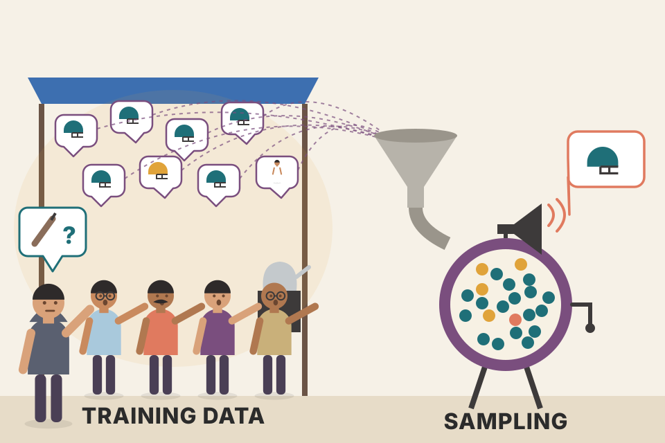
Asking a crowded tea stall "who's the best batsman ever?" Every time, a different person shouts the answer: mostly Sachin, sometimes Kohli, now and then someone's cousin who played Ranji. The model is that whole crowd compressed into one voice that answers by lottery weighted by the crowd's opinions. Where it breaks: a crowd's odd voice is one person; a model's odd answer is delivered with the same confidence as the common one.
Every response is a chain of draws from probability distributions (plates 20–23). Training gives non-zero probability to anything that resembles patterns in the data, including fringe claims. Low temperature and tight top-p shrink the chance of rare paths but don't make it zero, and different paths diverge quickly because each token conditions all later ones.
"Why is building on LLMs different from normal backend engineering?" Say: "Outputs are probabilistic, so the same request can give different answers and occasionally unfounded ones. That changes testing (evaluate distributions, not single outputs), product design (caching, review steps, citations), and monitoring. In Huyen's data, a fifth of support tickets at one AI company were about inconsistency, and hallucination is the top enterprise blocker."
Inconsistency shows up in two scenarios:
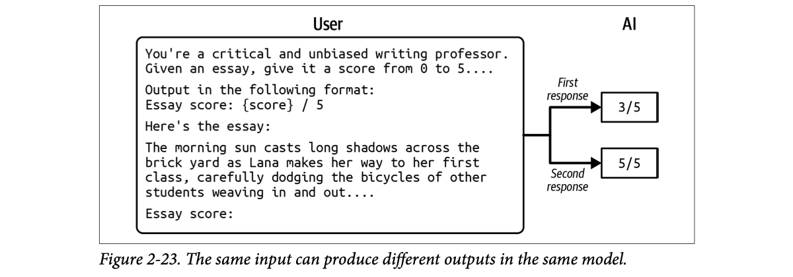
How to read this figure. The box on the left is one prompt: "You're a critical and unbiased writing professor… score from 0 to 5", an output format ("Essay score: {score} / 5"), then a short essay about a student named Lana walking to class. The two arrows on the right are two runs of the same prompt in ChatGPT: the first response says 3/5, the second 5/5. Same essay, same instructions, two very different grades.
This is jarring. Between people we expect consistency; imagine someone telling you a different name each time you meet. Users expect similar consistency from AI.
Fixing settings is good practice but doesn't inspire trust. Imagine a teacher who grades you consistently only when sitting in one particular room, and wildly anywhere else.
Harder. Fixed generation settings still help, but they can't force the same output for different inputs. You can get closer to what you want with carefully crafted prompts (Chapter 5) and a memory system (Chapter 6).
The grader model's score distribution for the essay is modelled as 3/5: 35%, 4/5: 40%, 5/5: 25%. Toggle the mitigations and grade the same essay five times.
Calling a bank's helpline twice with the same question and getting two different answers from two agents. The bank can give agents a script (fixed settings), keep an FAQ of approved answers (cache), but if you phrase the question slightly differently, a new agent may still take a different path. Where it breaks: human agents differ because they are different people; a model differs because it rolls dice.
With temperature > 0, a random number decides each token; a fixed seed makes that random sequence repeatable. But GPU floating-point arithmetic isn't perfectly associative: parallel sums in a different order (different hardware, batch sizes, kernels) give tiny logit differences, and when two tokens are nearly tied, a tiny difference flips the choice, and the rest of the text diverges from there.
"Users complain your assistant gives different answers to the same question. What do you do?" Say: "First, lower temperature and fix sampling params and seed where the API allows. Cache answers for identical or near-identical queries, ideally a semantic cache. For grading or decisions, use structured rubrics and maybe majority vote. Accept that hardware nondeterminism means no hard guarantee, and for slightly different phrasings, improve prompts and add memory so the model stays consistent with past answers."
Hallucinations are fatal for tasks that depend on facts. Explaining a vaccine's pros and cons, you don't want pseudo-science. In June 2023 a law firm was fined for submitting fictitious legal research to court; they had used ChatGPT without knowing it can hallucinate.
Hallucination isn't new with LLMs. It was common in generative models before "foundation model" and the transformer existed. In text generation it was mentioned as early as 2016 (Goyal et al.), and detecting and measuring it has been a staple of NLG (natural language generation) since (Lee et al., 2018; Nie et al., 2019; Zhou et al., 2020). This section is about why it happens; detecting and measuring it is Chapter 4.
Inconsistency comes from sampling randomness; hallucination is more nuanced. Sampling alone doesn't explain it: a model samples from probable options, so how does something never seen become probable? A model can output something believed not to be in its training data, though nobody can be sure, since you can't comb through all the data. Building something so complex we can't fully understand it is both a blessing and a curse. Without knowing why hallucinations happen, it's hard to stop them. There are two hypotheses.
A model hallucinates because it can't tell the data it's given from the data it generates. Example: prompt "Who's Chip Huyen?", and the first generated sentence is "Chip Huyen is an architect." The next token is conditioned on "Who's Chip Huyen? Chip Huyen is an architect." The model treats its own sentence like a given fact. Starting from something slightly off, it can expand into outrageously wrong facts. Ortega and co-authors called hallucination a form of self-delusion.
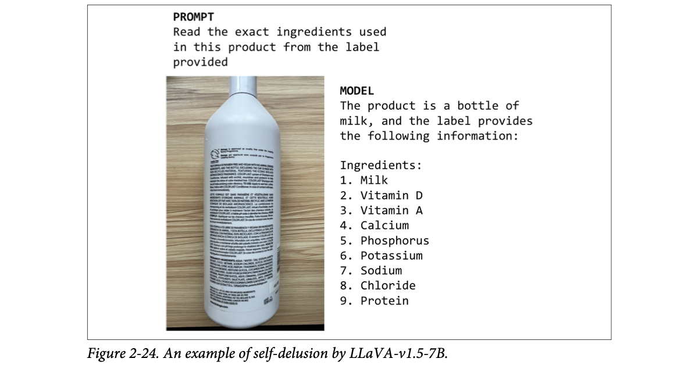
How to read this figure. The prompt asks the model to read the exact ingredients from the label of the product in the photo, which is a white shampoo bottle with small text. The model's first claim is that the product is a bottle of milk. Having said that, it "reads" a list consistent with milk: milk, vitamin D, vitamin A, calcium, phosphorus, potassium, sodium, chloride, protein. None of these come from the label; every item follows from its own first mistake.
Zhang et al. (2023) call this snowballing hallucinations: after an incorrect assumption, a model keeps hallucinating to justify it. Interestingly, an initial wrong assumption can make the model fail questions it would otherwise answer correctly.
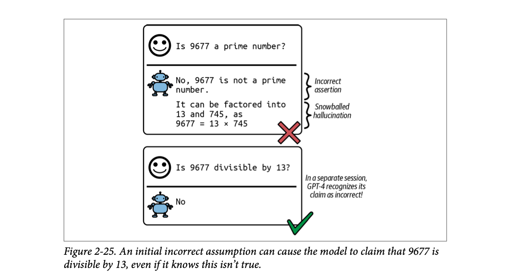
How to read this figure. Top chat: asked "Is 9677 a prime number?", the model wrongly says no (the incorrect assertion), then invents support: 9677 = 13 × 745 (the snowballed hallucination; 13 × 745 is actually 9685). Bottom chat, a separate session: asked directly "Is 9677 divisible by 13?", GPT-4 correctly says no. So the model "knew" the fact, but its first wrong claim pushed it into a false justification.
The DeepMind paper offers two mitigations: (1) from reinforcement learning, make the model distinguish user-provided prompts (called observations about the world in RL) from tokens it generated (its actions); (2) from supervised learning, include factual and counterfactual signals in the training data.
Hallucination comes from a mismatch between the model's internal knowledge and the labeler's. In SFT, models learn to mimic labeler-written responses. If a response uses knowledge the labeler has but the model doesn't, we're effectively teaching the model to hallucinate. In theory, if labelers attached the knowledge behind each response, the model would know the answer isn't made up and could learn to use only what it knows. In practice that's impossible.
John Schulman (OpenAI co-founder) expressed the same view in an April 2023 UC Berkeley talk. He also believes LLMs know whether they know something, itself a big claim. If true, hallucinations can be fixed by forcing models to answer only from what they know. He proposed:
Schulman said OpenAI found RLHF helps reduce hallucination. But the InstructGPT paper shows RLHF made it worse:
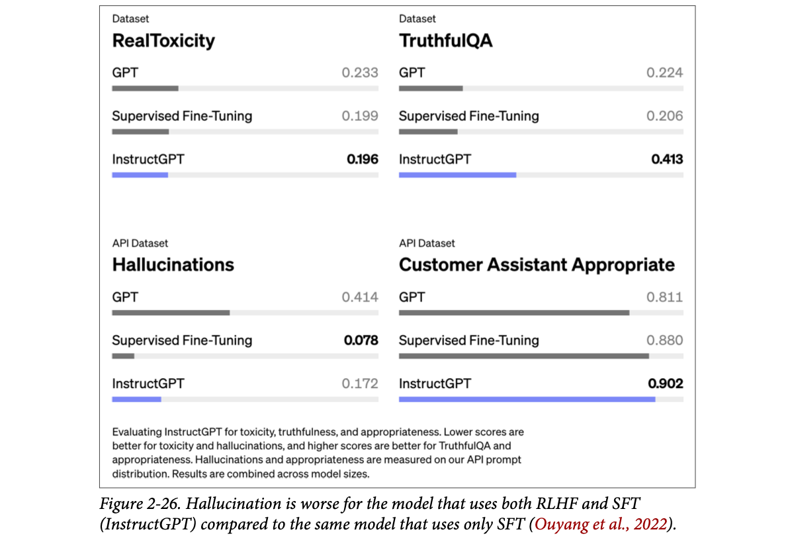
How to read this figure. Four panels, three models each: base GPT, SFT only, and InstructGPT (SFT + RLHF). Lower is better for toxicity and hallucinations; higher is better for TruthfulQA and appropriateness. RealToxicity: 0.233 → 0.199 → 0.196 (RLHF slightly best). TruthfulQA: 0.224 → 0.206 → 0.413 (RLHF clearly best). Hallucinations (on OpenAI's API prompts): 0.414 → 0.078 → 0.172, so SFT alone hallucinates least and adding RLHF more than doubles it. Customer Assistant Appropriate: 0.811 → 0.880 → 0.902 (RLHF best). Results are combined across model sizes.
So RLHF worsened hallucination for InstructGPT but improved other aspects, and overall human labelers preferred the RLHF model over SFT alone.
The two hypotheses complement each other: self-delusion explains how self-supervision causes hallucination; mismatched knowledge explains how supervision causes it. If we can't stop hallucinations, can we at least detect them before serving users? That's hard too (think how hard it is to tell when a person is lying), but people have tried; see Chapter 4.
Self-delusion: a nervous student in a viva says one wrong thing ("the Treaty was in 1857"), and rather than retract it, keeps building a story around it to stay consistent. Mismatched knowledge: a coaching class that makes students memorise model answers full of facts the students never learned, so they learn that confident-sounding answers are what's rewarded, whether or not they know. Where it breaks: the student knows they're bluffing; whether a model "knows that it doesn't know" is exactly the open question.
Autoregressive generation conditions every token on all previous tokens, generated ones included, so an early error becomes part of the "evidence". And SFT/RLHF reward the form of good answers; if graders can't check facts the model lacks, the model is rewarded for fluent guesses. Grounding (RAG with citations), shorter answers, abstention instructions and better reward design all target one of these two mechanisms.
"Why do LLMs hallucinate and how do you reduce it in a RAG system?" Say: "Two hypotheses: self-delusion, where the model treats its own generated text as fact and snowballs; and training on labeler answers that use knowledge the model lacks, which teaches confident guessing. In practice I ground answers in retrieved context, require citations and verify them, instruct the model to abstain when unsure, keep answers concise, use low temperature for factual tasks, and run a hallucination check before showing the answer. In a voice agent, where users can't see citations, I'd be stricter about abstaining."
The chapter covered the core design decisions behind a foundation model. Most people will use ready-made models, so Huyen skipped training minutiae and focused on factors that help you choose and use models.
| Term | Meaning in one line |
|---|---|
| Common Crawl / C4 | Huge web crawl (2–3B pages/month) and Google's cleaned subset; the default, noisy training source. |
| Low-resource language | A language with little training data (e.g. Punjabi, Telugu, Marathi): weaker and costlier in models. |
| Seq2seq | RNN encoder–decoder; decoder sees only the final hidden state; sequential. |
| Transformer | Architecture built on attention; parallel input processing, sequential output. |
| Prefill / decode | Parallel processing of the prompt (builds K,V) / one-token-at-a-time generation. |
| Query, key, value | What the current step looks for / a token's label / a token's content; attention = softmax(QKᵀ/√d)V. |
| Multi-head attention | Q, K, V split across heads (Llama 2-7B: 32 heads × 128) to attend to different things at once. |
| Transformer block | Attention module (Q, K, V, O) + MLP module (feedforward layers + activation). |
| Embedding / unembedding | Tokens & positions → vectors at the start; vectors → token logits at the end (model head). |
| SSM, Mamba, Jamba, RWKV | Alternatives to transformers with linear-time sequence processing; Jamba is a transformer–Mamba hybrid. |
| Sparse model / MoE | Many parameters zero or inactive; MoE routes each token to a few experts (Mixtral: 46.7B total, 12.9B active). |
| Training tokens / epoch | Tokens actually trained on; an epoch is one pass over the dataset. |
| FLOPs vs FLOP/s | Amount of compute a task needs vs a machine's speed. |
| Utilization | Share of peak compute actually used (50% okay, 70%+ great). |
| Compute-optimal / Chinchilla law | Best model for a FLOP budget; ≈ 20 training tokens per parameter. |
| Inverse scaling | Tasks where bigger or more-aligned models do worse. |
| Hyperparameter / scaling extrapolation | Settings you choose / predicting good settings for big models from small ones. |
| Emergent abilities | Abilities that only appear at scale. |
| SFT / demonstration data / behaviour cloning | Finetuning on (prompt, response) examples so the model converses. |
| Preference finetuning: RLHF, DPO, RLAIF | Aligning outputs with human preference via a reward model + RL, directly from pairs, or with AI feedback. |
| Reward model / comparison data | Scores (prompt, response); trained on (prompt, winner, loser) with −log σ(s_w − s_l). |
| PPO | Proximal policy optimization, the RL algorithm commonly used in RLHF. |
| Best of N | Generate N outputs, keep the best by a scorer. |
| Logits / softmax | Raw per-token scores / converts them to probabilities. |
| Greedy sampling | Always pick the most likely token (temperature 0 = argmax). |
| Temperature | Divide logits by T before softmax: low = sharp/consistent, high = flat/creative. |
| Logprobs | Log probabilities; avoid underflow; often limited by APIs. |
| Top-k / top-p (nucleus) / min-p | Keep k most likely / smallest set reaching mass p / tokens above a probability floor. |
| Stopping condition | Max tokens or stop tokens (e.g. end-of-sequence). |
| Test time compute / beam search | Spend more inference compute on multiple candidates / keep the most promising partial candidates. |
| Verifier / self-consistency | Model that scores solutions / majority vote over samples. |
| Robustness | Output doesn't change much with small input changes. |
| Semantic parsing | Natural language → structured format (text-to-SQL). |
| JSON mode | API feature guaranteeing valid JSON syntax (not content, not against truncation). |
| Constrained sampling | Mask logits by a grammar so only valid tokens can be sampled. |
| Classifier head / feature-based transfer | Small output layer for fixed classes on top of a base model. |
| Probabilistic vs deterministic | Outputs drawn from a distribution vs fixed outcomes. |
| Inconsistency | Different outputs for the same or slightly different inputs. |
| Seed | Starting point of the random number generator used for sampling. |
| Hallucination / self-delusion / snowballing | Ungrounded output / treating own text as fact / justifying an early mistake with more errors. |
best_of, logprobs for top 20 tokens, verifiers for math.temperature, top_p, max_tokens, stop, seed, logprobs and response_format field in an LLM API maps to plates 21–28.Telugu is badly under-represented in Common Crawl (world-to-CC ratio ~65), so the model saw little of it. Burmese needs a median of 72 tokens for what English says in 7, and cost and latency scale with tokens.
Seq2seq's decoder only sees the final hidden state (summary only), and it processes input sequentially. Attention lets each output look at every input token, and input is processed in parallel (prefill). Output generation is still sequential (decode).
128: the hidden size 4096 is split across 32 heads, 4096 / 32 = 128.
No (Table 2-4 note). It increases memory footprint, mainly through more key/value vectors to store, but not the parameter count.
Experts share some parameters, so the total is 46.7B rather than 8 × 7B. Only two experts run per layer per token, so each token uses 12.9B parameters: cost and speed of a 12.9B model.
About 60B (20×). Use more when inference cost matters more than training cost: a smaller, over-trained model is cheaper to serve (Llama's choice; Sardana et al. adjust the law for inference demand).
0.73, 0.88, and → 1 (argmax). Lower temperature sharpens the distribution.
0.9: yes and maybe (cumulative 91%). 0.99: yes, maybe and no.
Log scale avoids underflow of tiny probabilities over large vocabularies. Exposed logprobs make it easier to replicate the model, so APIs restrict them (OpenAI top 20; Anthropic none).
Logprobs are negative, so totals favour short outputs. Averaging per token removes the length bias.
Truncation at max tokens (JSON mode guarantees syntax only if generation completes), or post-hoc text/format errors when not truly constrained. Also, valid JSON can still hold wrong content.
For each (prompt, winner, loser) it minimises −log σ(r(winner) − r(loser)), pushing the winner's score above the loser's. A ranking of A > B > C gives three pairs.
Hardware: different machines execute operations differently and handle number ranges differently, so tiny numeric differences can flip close token choices. With an API, that's under the provider's control.
Self-delusion (model can't separate given data from its own generations; mitigate by teaching it to distinguish observations from actions, or grounding/verification). Mismatched knowledge (SFT on labeler answers using knowledge the model lacks; mitigate with verification of sources, rewards that punish fabrication, or prompts allowing "I don't know" and concise answers).
Yes on coding benchmarks, per Gunasekar et al. (2023): data quality can beat sheer size, though the model will be narrow.
Several entries are described by subject from the book's in-text citations (author and year), which don't always give the full title.